העמוד הזה טוען את התצלומים ואת המסמכים ישירות מתיקיית docs/ שלצדו — לחיצה על כל ראיה פותחת את קובץ המקור המלא.
דף נלווה למחקר על מרים לבית דהן: מרדכי בן הרוש, בעלה (מכנאס, 1928 — צו בית משפט השלום בת ים–חולון, 20.12.1990, שתיקן את שנת הלידה בתעודת הזהות; נפטר 2010).
מרדכי עצמו נמצא — במסמכים שהמשפחה שמרה, ממכנאס ומישראל (סעיף 5.5): תעודה של ועד הקהילה היהודית במכנאס מ-7.3.1950, עם תצלומו, המעידה ש"מרדוך בנארוש, בן יונאס בנארוש ויאקות חיון", כבן 22, נולד במכנאס; ותרגום צרפתי מאושר (10.8.1950) של כתב עדות עברי שנחתם במכנאס ב-א' בחשוון תש"י (24.10.1949) — שני עדים מעידים ש"מרדכי בן יונה בנהרוש ויאקות בת דאוד אוחיון" יליד מכנאס לא נשא אישה עד יום שעזב את עירנו להתיישב בפלשתינה, ואביו יונה מוסר שבנו בן 22. עמם — הקדשה על גב תצלום, 1.7.1951, מאת כותב שטרם זוהה — מרדכי או חבר בן עירו. המסמכים נותנים בפעם הראשונה את שם נעוריה של אמו — אוחיון (חיון), בת דוד — ושנת לידה של 1926/27–1927/28, השונה מ-1931 שבזיכרון המשפחה. ולסה-פסה של הקונסוליה הצרפתית בירושלים, 11.8.1950 — לנסיעה חד-פעמית "חזרה למרוקו, דרך צרפת", אל ביתו "במכנאס, רחוב בית הקברות, המלאח החדש"; "נולד, כמשוער, ב-1928 במכנאס", "מקצוע: סנדלר" — כלומר בקיץ 1950 מרדכי, כבר בישראל, הצטייד במסמך לחזרה למרוקו; ייתכן שלשם כך הוזמנה תעודת הקהילה (מרץ 1950), ואילו כתב העדות על רווקותו אושר במכנאס רק אחרי מתן הלסה-פסה — וסביר שנועד לנישואין. ומסמכים מישראל: מעטפה רשומה מ-1.8.1956 אל "בן הרוש מרדכי, צריף מס' 171, מעברת טירת הכרמל" — חוף הכרמל, האזור של מגדים ועתלית; מכתב בכתב ידו אל מנהל מעברת טירה על דיור "בתור עולה חדש" — שנכתב אחרי שעזב את המעברה, "שהיינו"; וצו בית משפט מ-1990 הקובע שנולד ב-1928 ותעודת הזהות תתוקן — הכרעה בשאלת 1927/1931. משפחתו נמצאה בשני מסמכים נוספים, והזיהוי מדורג כמעט ודאי. פנקס בית הספר לבנות של אליאנס במכנאס רושם ב-1953 את אחותו אסתר בנארוש, בת 5, על שם ההורים Yona · Yacot, הורים סוחרים בעיר החדשה. ורשימת העולים שכותרתה "ארצה", 11.6.1956 — ככל הנראה שם האונייה — רושמת את ההורים יונה (1912 או 1918) ויקוט (1918) בן-הרוש עם ארבעה ילדים — גבריאל, ז'וליט, סלומון ואסתר — ולצדם את האח יעקב (1933) ואשתו מרי; כולם נשלחו לצפת. המשפחה אישרה את האחים, והוסיפה שני אחים בכורים שלא עלו — ניסים (מקסים) ומרים. בעמודת ההורים של יונה: מרדכי ומרים — מרדכי נקרא, ככל הנראה, על שם סבו. מרדכי עלה לבדו, לפני משפחתו — כך המשפחה, וכך כתב העדות ממכנאס ("עזב את עירנו להתיישב בפלשתינה"): מאומת. אבל מתי ובאיזה גיל — עכשיו שאלה פתוחה: המשפחה זוכרת 1947/48, נער בן 16–17, בעליית הנוער; המסמכים מ-1949–1950 אומרים בן 22 — ורשומת קיבוץ רשפים, שנשללה בעבר בגלל "1927", חוזרת להיות מועמדת לרשומת העלייה שלו: "בן-ארוש מרדכי, 1927, מרוקו", הגיע 22.6.1949 בחבורת עולים מצפון אפריקה, לא נשאר בקיבוץ — יצא לצבא (סעיף 5.4): ככל הנראה. לרישום שלו עצמו נותר מועמד אחד: רישום שינוי השם "בנערוש מרדושי" ממושב מגדים, 12.12.1954, הנושא את הכינוי שהמשפחה אישרה. מועמד שני באותו כינוי — "בן הראש מרדושה" מירושלים, 1963, שמביא עמו מספר זהות — ככל הנראה נשלל ב-12.09.2026: המשפחה מסרה את מספר הזהות של מרדכי, והוא אחר (ההשוואה אינה ניתנת לאימות חיצוני). הכינוי עצמו נפוץ (36 רשומות שינוי שם ב-IGRA), המשפחה אינה יודעת על מגדים ולא על שינוי שם, ולכן הזיהוי של רישום מגדים נשאר ככל הנראה — לא יותר. מה שיכריע: מספר הזהות שברישום מגדים — שנקרא עכשיו מסריקה לא-מוסתרת של הגיליון, ז/203321 בפורמט הישן — מול תמצית הרישום של מרדכי ממרשם האוכלוסין (קרוב מדרגה ראשונה), שתאמר אם זה מספרו הקודם ואם היה אי-פעם "בנערוש".
שבעה מועמדים נשללו — ובהם זה שמירושלים — לפי שנת לידה, הורים, מוצא או מספר זהות, ואחד (רשפים 1949) הוחזר למועמדות (אחד מהם — ככל הנראה; אחד מהם מסכם 13 תוצאות אינדקס). כל מסמך שנקרא מופיע פעמיים: קישור אל הרשומה בארכיון וקישור אל עותק שמור (ערכי אינדקס וחיפושים מקוונים — בקישור חיצוני בלבד, ומסומנים ככאלה). גם ממצא שלילי נרשם, עם הכיסוי המדויק שלו.
מאיפה להתחיל
- מה ידוע מהמשפחה — נקודת המוצא.
- המועמד — מגדים 1954 — הרישום, מה תומך, מה עומד נגד, והמועמד השני שככל הנראה נשלל לפי מספר זהות.
- מועמדים שנשללו — שבע רשומות והנימוק לכל אחת, ואחת שהוחזרה למועמדות.
- המשפחה במסמכים — אחותו בפנקס אליאנס מכנאס 1953; ההורים והאח ברשימת "ארצה" 1956; מרדכי עצמו במסמכי מכנאס 1949–1950 (5.5); ומה לא נמצא.
- הפעולות הפתוחות — השאלה שמכריעה, ומה אחריה.
1. תמצית
מרדכי בן הרוש, בעלה של מרים לבית דהן, נולד במכנאס שבמרוקו ב-1928 — כך צו בית משפט השלום בת ים–חולון מ-20.12.1990, שתיקן את תעודת הזהות (שנשאה 1931, כזיכרון המשפחה),[21] ובהתאם ל"בן 22" במסמכי מכנאס 1949–1950 ול-1927 ברשומת רשפים (סעיף 5.5, מקור 3) — בנם של יונה ויקוט לבית אוחיון,[15][16] עלה לישראל לבדו (1947/48 לפי המשפחה; יוני 1949 לפי רשומת רשפים, ככל הנראה), ונפטר ב-2010.[4] דף זה מרכז את מה שנבדק עד כה בארכיונים הישראליים ובפנקסי אליאנס במרוקו, את המועמדים שנמצאו ואת מה שנשלל.
התמונה נכון להיום: מרדכי עצמו תועד בעשרה פריטים שהמשפחה שמרה, 1949–1990 — תעודת הקהילה במכנאס עם תצלומו, כתב עדות על היותו רווק שעזב לארץ ישראל, תצלום במדים עם הקדשה חתומה בשמו מ-29.8.1949, אישור חברות בהסתדרות מחיפה (יולי 1950, "נולד 1931", סנדלר), לסה-פסה מירושלים 1950, מעטפה ומכתב מטירת הכרמל 1956, וצו בית משפט 1990 (סעיף 5.5) — והוריו, אחיו ואחותו תועדו בשני מסמכים נוספים — פנקס אליאנס מכנאס 1953 (אחותו אסתר, הורים Yona/Yacot)[10] ורשימת העולים של "ארצה", 11.6.1956 (יונה ויקוט עם ארבעה ילדים, והאח יעקב עם אשתו — לצפת)[11] — ראו סעיפים 5.2–5.3. בהנחת הזיהוי — כמעט ודאי — עולה מהרשימה ששמות הוריו של יונה היו מרדכי ומרים, ומרדכי נקרא, ככל הנראה, על שם סבו (המסמך אומר רק שאביו של יונה נקרא מרדכי). לפי המשפחה מרדכי לא היה הבכור: קדמו לו ניסים (מקסים) ומרים, שנשארו במרוקו. ההורים היו במכנאס ב-1953 (פנקס אליאנס) ועלו ממרוקו ביוני 1956 — ומכאן, וכך גם מסרה המשפחה, שמרדכי עלה לבדו, לפני משפחתו — לפי זיכרון המשפחה נער בן 16–17 (על בסיס 1931); לפי 1928 ורשומת רשפים — בן 21. לרשומת שינוי השם שלו מועמד אחד בילקוט הפרסומים (ומועמד נפרד לרשומת העלייה — עתלית 39404, סעיף 5.4): "בנערוש מרדושי" ממושב מגדים, שקיבל את השם "בן הרוש מרדכי" ב-12.12.1954.[1] רישום שני באותו כינוי — "בן הראש מרדושה" מירושלים, ספטמבר 1963, מספר זהות 6419140[13] — ככל הנראה נשלל: מספר הזהות של מרדכי, שמסרה המשפחה (12.09.2026), שונה (סעיף 3.4). רישום מגדים מאומת; זיהויו כמרדכי בעלה של מרים — ככל הנראה: הכינוי אושר במשפחה, המשפחה אינה יודעת על מגדים ולא על שינוי שם, ופרק 3 מפרט מה תומך ומה עומד נגד.
מה שנשלל: שבעה מועמדים בשם דומה (ושמיני — רשפים — הוחזר למועמדות) או קרוב ב-IGRA וברשימות העולים, שפרטיהן (שנת לידה, הורים, מוצא) אינם מתיישבים עם הידוע (פרק 4).
2. מה ידוע מהמשפחה
המידע שנמסר, והוא הבסיס לזיהוי — לא ראיה בפני עצמו:[4]
- מרדכי בן הרוש. שנת לידה 1931 — כך נמסר (12.09.2026), ולפי המשפחה כך נשאה תעודת הזהות עד 1990 — וכך כבר באישור ההסתדרות מחיפה, יולי 1950 (5.5, ח): צו בית משפט מ-20.12.1990 קבע שנולד ב-1928 ותיקן אותה (5.5, ה; הצו אינו מציין מה היה הרישום הקודם); המסמכים ממכנאס אומרים 1926/27–1927/28. מקום הלידה: מכנאס (נמסר 11.09.2026; מאומת במסמכים).
- המשפחה שמרה מסמכים מקוריים של מרדכי — ממכנאס 1949–1950 ומישראל 1950–1990 — ומסרה את צילומיהם (12–13.09.2026): עשרה פריטים, סעיף 5.5.
- הוריו: יונה ופנינה. המשפחה (12.09.2026): "1912 לא הגיוני כשנת לידה של יונה" — מול הרשימה (5.3). במרוקו קראו לאמו יקוט — אושר (12.09.2026); ברשומות ממרוקו ומהנמל היא "יקוט"/Yacot; שם נעוריה — אוחיון (Ohayon / Hayoun), בת דוד — מהמסמכים (5.5). יונה נולד, "לפי הידוע", ב-1898 (12.09.2026) — לעומת 1912/1918 ברשימת העולים (סעיף 5.3). ההורים עלו ביוני 1956 לצפת, לא נשארו שם ועברו לתל אביב–יפו; קבורים בהר המנוחות בירושלים; שנות הפטירה ייבדקו במשפחה.
- עלה ב-1947 או 1948, בגיל 16–17, לבדו, ללא ההורים, במסגרת עליית הנוער (אושר 12.09.2026). דרך העלייה (אונייה או מטוס), הנמל, ומעבר דרך קפריסין או עתלית — לא ידועים. הוסיף לגילו שנה-שנתיים והתגייס לצבא מיד עם עלייתו, ב-1947 או 1948, כשאמר שהוא בן 18.
- אחיו ואחיותיו (12.09.2026): המשפחה מכירה את כולם — יעקב ואשתו מרי, גבריאל (גבי), ז'וליט, סלומון ואסתר. מרדכי לא היה הבכור: קדמו לו ניסים (מקסים) ומרים, שלא עלו לישראל. נמסר (12.09.2026, שנית): ניסים (מקסים) חי במרוקו כמעט עד יום מותו, עם אשתו; שלושת ילדיו חיים בצרפת. מרים עברה לפריז עם בעלה שמואל רואש; שניהם נפטרו בפריז ונקברו בישראל — שמואל בקריות (חיפה), מרים בהר המנוחות בירושלים; ארבעת ילדיה גדלו בפריז. (שמות בני הדור החי — לא מתפרסמים, 9.6.) ועוד אח צעיר ממנו, מיכאל מכלוף, שעלה לישראל — לא ברור מתי, עם כל המשפחה או לפניהם. הוא אינו ברשימת "ארצה" 1956 עם ההורים, ולכן — אם עלה — עלה בנפרד.
- מספר הזהות שלו נמסר מתעודותיו (12.09.2026); אינו מתפרסם, ושימש לשלילת המועמד מירושלים 1963 (סעיף 3.4).
- בילדותו כינו אותו "מרדושי" (אושר 12.09.2026). האם גר במגדים או בסביבת עתלית, ואם שינה אי-פעם את שם משפחתו במשרד הפנים — לא ידוע.
- נישואין קודמים: היה נשוי לאישה בשם חנה (אניטה) לבית יפלח (שם המשפחה נמסר 13.09.2026), ולהם בן, יוני — נקרא על שם אביו של מרדכי (נמסר 12.09.2026, "אם אני לא טועה"); נולד בשנות החמישים — רלוונטי רק לתיארוך הנישואין הראשונים. הנישואין — "1953 לערך", העיר לא ידועה; שם משפחתה של חנה ייבדק (12.09.2026, שנית). אין במשפחה תעודת נישואין (גם לא של הנישואין למרים), ואין מסמכי צבא. על משפחת יפלח (13.09.2026): לחנה כ-10–11 אחים ואחיות; אחד מאחיה היה, לפי זיכרון המשפחה, שחקן מפורסם מאוד בארץ ובחו"ל — שמו הפרטי לא ידוע. הערת מחקר: השחקן הבינלאומי אהרן איפלה (1941, מרוקו — 2016; הלוויה בחולון), שהשתתף בסרטים אמריקניים ובריטיים, הוא מועמד לפי צליל השם (Ipalé / יפלח) — טעון אימות: המשפחה לא מסרה שם, ולא נמצא מסמך המקשר בינו לבין חנה; לשאול את המשפחה.
- מגורים במעברת טירה (13.09.2026): לפי עדויות רבות במשפחה, מרדכי גר ב-1956 — ואולי שנה-שנתיים קודם — במעברת טירה הצפונית, מחנה ד', צריף 171, כשהיה נשוי לחנה. זה מתיישב עם המעטפה מ-1.8.1956 ("צריף מס' 171, מעב' טירה הכרמל") ועם מכתב ויינר ("למעברה שהיינו — טירה צפונית") — 5.5, ד. "טירה צפונית" במכתב היא אפוא שם המעברה (טירה הצפונית), לא כיוון גאוגרפי.
- עבודה בסולל בונה באילת (13.09.2026): מרדכי עבד כמה שנים בשנות החמישים בסולל בונה באילת; במשפחה מסמך מ-1959 — טרם נמסר (פרק 7, פעולה 8).
- נישא למרים דהן (ילידת מכנאס, 1939; עלתה 1956) בתל אביב, בספטמבר 1960 (12.09.2026) — המחקר על מרים.
- פרטי בני הדור החי (אחיו ואחיותיו, אשתו הראשונה ובנו) מובאים כאן במידה מזערית, כפי שנמסרו ובהסכמת המוסר; ראו סעיף 9.6.
- נפטר ב-2010; קבור בבית העלמין ירקון (משפחה).
3. המועמד לרשומת שינוי השם — ומועמד שני שנשלל
3.1 הרישום הראשון — "בנערוש מרדושי", מגדים, 1954
ילקוט הפרסומים 407, ח' בניסן תשט"ו (31.3.1955), עמ' 647, "הודעה בדבר שינויי שם", רשימה מס' 10, מחוז חיפה — נפת חדרה.[1] השורה:
| שדה | קריאה | דירוג |
|---|---|---|
| השם הקודם | בנערוש · מרדושי | מאומת — דפוס ברור |
| השם החדש | בן הרוש · מרדכי | מאומת |
| מקום המגורים | מגדים | מאומת |
| תאריך אישור השינוי | 12.12.54 | מאומת |
| מספר הזהות במרשם התושבים | ז/203321 (האות — ז או ג; הספרות חד-משמעיות) — נקרא מסריקת הגיליון באתר olaw.org.il; בסריקת IGRA העמודה מושחרת בכל שורות הרשימה | מאומת (הספרות) · ככל הנראה (האות) |
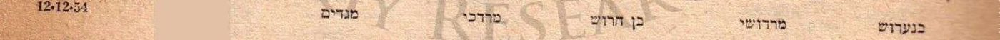
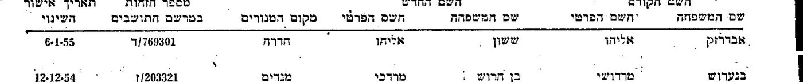
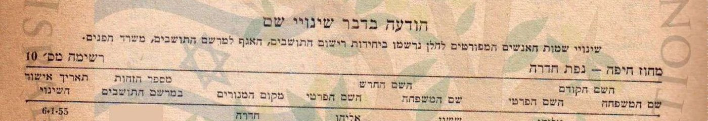
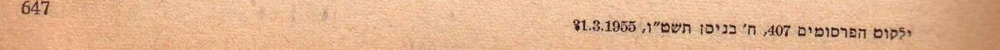
3.2 מגדים — מה תומך
- מגדים הוא מושב ליד עתלית, שהוקם ב-1949 על ידי עולים מצפון אפריקה.[7] נער שעלה ממרוקו לבדו ב-1947/48 מתאים לפרופיל של מתיישבי המקום — נימוק נסיבתי אחד, והוא נמנה כאן פעם אחת.
- "מרדושי" — המשפחה אישרה (12.09.2026) שכך כינו את מרדכי בילדותו.[4] הרישום נושא את הכינוי, ולא את השם הרשמי; החלפתו ב"מרדכי" ו"בנערוש" ב"בן הרוש" היא תקנון כתיב, לא שינוי שם של ממש. (השאלה למשפחה נשאלה כשאלה סגורה — הכינוי הוצג לפני התשובה; ראו M-T1.) הראיה תקפה במידה שווה לשני המועמדים.
- טירת הכרמל 1956: באוגוסט 1956 גר במעברת טירת הכרמל (מעטפה רשומה, 5.5 ד) — חוף הכרמל, כ-15 ק"מ ממגדים; מגורים באותו אזור שנה וחצי אחרי הרישום — ראיה נסיבתית.
- בגיל 26 (יליד 1928) — גיל סביר לרישום כזה לקראת עבודה או נישואין (השערה, ללא מקור סטטיסטי); לפי המשפחה נישא לראשונה באמצע שנות החמישים.
3.3 מגדים — מה עומד נגד
- ההודעה אינה כוללת שנת לידה או שמות הורים; מספר הזהות שבה (ז/203321) הוא בפורמט הישן, ולא הושווה עדיין למספרו של מרדכי במרשם.
- שכיחות הכינוי (נבדקה 12.09.2026; הבדיקה הורחבה לכתיב "מרדושה" באותו יום — ראו יומן, מהדורה 11): במאגר שינויי השמות של IGRA "מרדושי" מופיע ב-19 רשומות ו"מרדושה" ב-17 נוספות — 36 בסך הכול (1954–1979), כינוי חיבה נפוץ בקרב יוצאי מרוקו, בשמות משפחה רבים (אלבז, שוקרון, לוי, מלכה, אוחנה, ביטון, אדרי ועוד); הצירוף כינוי + בן הרוש (על כתיביו) מופיע פעמיים — מגדים 1954 וירושלים 1963 (N-6).[8] המאגר מכיל רק מי ששינו את שמם, ולכן אינו אומד את שכיחות הצירוף באוכלוסייה.
- השם מרדכי בן הרוש נפוץ; חיפוש פונטי ב-IGRA (Harush + Mordekhai) מחזיר 13 תוצאות (1839–1960), שמונה מהן אכן בשם מרדכי הרוש/ארוש/חרוש — ואף אחת עם 1931 או יונה/יקוט (פרק 4).
- אין עדיין מסמך אחר שמקשר את מרדכי בעלה של מרים למגדים או לעתלית.
- המשפחה אינה מכירה מגורים במגדים ואינה יודעת על שינוי שם — שתי תשובות שליליות, לא רק היעדר ידיעה; ולפי אותה עדות היה בצבא מ-1947/48 ואב לילד קטן באמצע שנות החמישים — פרופיל שאינו בהכרח של מושבניק. השאלה על הכינוי נשאלה כשאלה מובילה.
- מועמד שני באותו כינוי ובאותו שם משפחה נבדק וככל הנראה נשלל לפי מספר זהות — 3.4; הצירוף כינוי + שם משפחה חוזר אפוא אצל אדם אחר, ולכן אינו מזהה.
3.4 הרישום השני — "בן הראש מרדושה", ירושלים, 1963 — נשלל
נמצא ב-12.09.2026, כשבדיקת שכיחות הכינוי הורחבה לכתיב "מרדושה": ילקוט הפרסומים 1144, כ"ה בטבת תשכ"ה (30.12.1964), עמ' 901, "הודעות בדבר שינוי-שם", מחוז ירושלים, נפת ירושלים, רשימה מס' 9/63 (אישורים מיום 1.9.63 עד 30.9.63), שורה 7.[13] ברשימה זו עמודת מספר הזהות גלויה — משום שהסריקה הורדה מאתר הגיליונות (olaw.org.il) ולא מ-IGRA, שמשחירה מספרי זהות בתמונות שהיא מגישה (ראו 9.1). IGRA מתייגת את הרשומה לפי שנת הפרסום, 1964; האישור עצמו — ספטמבר 1963.
| שדה | קריאה | דירוג |
|---|---|---|
| השם הקודם | בן הראש · מרדושה | מאומת — דפוס ברור |
| השם החדש | בן הראש · מרדכי | מאומת |
| מס' הזהות במרשם התושבים | 6419140 | מאומת |
| מחוז ונפה | ירושלים | מאומת |
| תקופת האישור | 1.9.63 – 30.9.63 (כותרת הרשימה) | מאומת |
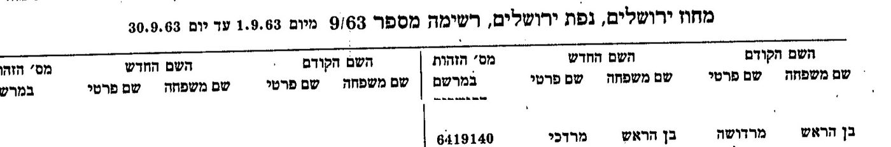
מה תמך: אותו כינוי, אותו שם משפחה ("בן הראש" — כתיב שנוסף למוסכמות 9.3 במהדורה 11); ירושלים — עיר משפחתה של מרים מ-1956. ההכרעה (12.09.2026): המשפחה מסרה את מספר הזהות של מרדכי מתעודותיו — והוא אינו 6419140. המספר עצמו אינו נרשם בשום קובץ של המאגר ואינו מתפרסם; המחקר לא ראה את התעודה, ולכן ההשוואה אינה ניתנת לאימות חיצוני — והמועמד מדורג ככל הנראה נשלל, לא "נשלל" חלק: "בן הראש מרדושה" מירושלים הוא, ככל הנראה, אדם אחר נושא אותו כינוי ואותו שם משפחה. צילום התעודה או תמצית הרישום (פרק 7, פעולה 1) יאמתו גם את ההכרעה הזו.
סיכום פרק 3: רישום מגדים 1954 חוזר להיות המועמד היחיד — ככל הנראה, לא יותר: הכינוי אושר (בשאלה מובילה) ונפוץ, כפי שמוכיח המועמד שנשלל; המשפחה אינה מכירה מגדים ולא שינוי שם; ואין מסמך שקושר את מרדכי למגדים. אבל יש עכשיו נתון חד: מספר הזהות שברישום, ז/203321, בפורמט הישן (אות + שש ספרות) — שאינו ניתן להשוואה ישירה למספר בן שבע הספרות שבידי המשפחה בלי מרשם התושבים. מה שיכריע: תמצית רישום של מרדכי ממרשם האוכלוסין "בתוספת פרטי כניסה לארץ, ישוב לידה ושמות קודמים"[14] — קרוב מדרגה ראשונה זכאי לה בלשכה (פרק 7, פעולה 1) — שתאמר אם ז/203321 הוא מספרו הקודם ואם "בנערוש" הוא שמו הקודם; או תיקו האישי בארכיון צה"ל (כתובת 1954).
4. מועמדים שנשללו
| מקור | מה רשום | למה נשלל | דירוג |
|---|---|---|---|
| רשימת עולים אפריל 1949, גל-15493/6 מסמך 192 שורה 54 — "מרדכי בנארוש"[2] | יליד 1910 | פער של 21 שנה משנת הלידה המשפחתית | נשלל |
| רשימת עולי קיבוץ רשפים 1949 (יד יערי), עמ' 12 שורה 2 — "בן-ארוש מרדכי"[3] | יליד 1927 · מרוקו · הגיע 22.6.49 בחבורת עולים · בית עולים "סנט-לוקס"(?) · "הנמצא בקיבוץ: לא" · "לאן הלך: צבא" | הוחזר למועמדות במהדורה 15: 1927 מתיישב עם "בן 22" במסמכי מכנאס 1949–1950, והיציאה לצבא — עם עדות המשפחה. ראו סעיף 5.4 | ככל הנראה — מועמד לרשומת העלייה |
| רשימת עולים אוקטובר 1949, גל-15494/5, עמ' 3 של הרשימה (עמ' 21 בקובץ ה-PDF, במניין מ-1), שורה 159 — "בן-ארוס מחלוף"[5] | יליד 1931 · הורים דוד/פרחה · ארץ מוצא: סימן דיטו, ששרשרתו מובילה לערך "ירן" בשורה 143 (כך מודפס; ככל הנראה "יון" או "איראן" — לא פוענח) — טעון אימות · מס' קופ"ח 112427 · ת.ע. 42267 · שער עלייה (נקרא מהסריקה, 12.09.2026; הקריאה תוקנה — ראו יומן, מהדורה 10) | ההורים דוד/פרחה, לא יונה/יקוט; ויליד 1931 — אינו צעיר ממרדכי, ולכן גם אינו האח מיכאל מכלוף | נשלל |
| ילקוט הפרסומים 1144 (30.12.1964), עמ' 901, ירושלים, רשימה 9/63 — "בן הראש מרדושה → בן הראש מרדכי"[13] | מס' זהות 6419140 · שינוי שם אושר 9/1963 | מספר הזהות של מרדכי (משפחה, מתעודותיו; לא נראה במחקר ואינו מתפרסם) שונה — סעיף 3.4 | ככל הנראה נשלל |
| רשימת "ארצה" 11.6.1956, גל-15499/1, עמוד 4, בלוק יוסף בן-הרוש — "מרדכי"[11] | יליד 1936 · הורים יחיא/חנה · עלה 6/1956 | עלה ב-1956 ולא ב-1947/48; ההורים יחיא/חנה; בן 20 בעלייתו ביוני 1956, ובן 11–12 ב-1947/48 — סעיף 5.3 | נשלל |
| רשימת עולים מרץ 1949 חלק ב, גל-15493/3, עמ' 45, שורות 199–202 — משפחת בן הרוש[6] | אסתר 1889 (יעקב/שמחה), יוסף 1901 (יצחק/מרי), אסתר 1913, אברהם 1947 | אין מרדכי; ההורים אחרים; "יקוט 1931" בשורה 198 שייכת למשפחת בן שמעון שמעליהם | נשלל |
| רשימת עולים יוני 1949, גל-15493/8, עמ' 150–151 — משפחת הרוש (יצחק, עמרם, חנה, רחל, ישראל, אליס, פרחה, רחמה, אסתר)[5] | תשע נפשות ממרוקו | אין מרדכי; אין יונה/יקוט בעמודת ההורים | נשלל |
| IGRA, "Harush" + "Mordekhai" (פונטי) — 13 תוצאות (1839–1960), שמונה מהן בשם מרדכי הרוש/ארוש/חרוש (נוטרים 1936/1947, שבויים 1948, שאלון עולה 1950 יליד קהיר, צפת 1839, אליאנס 1960 ועוד)[8] | — | אף אחת עם שנת לידה 1931 או הורים יונה/יקוט | נשלל |
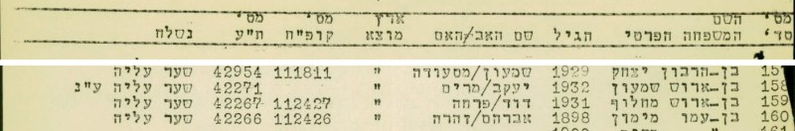
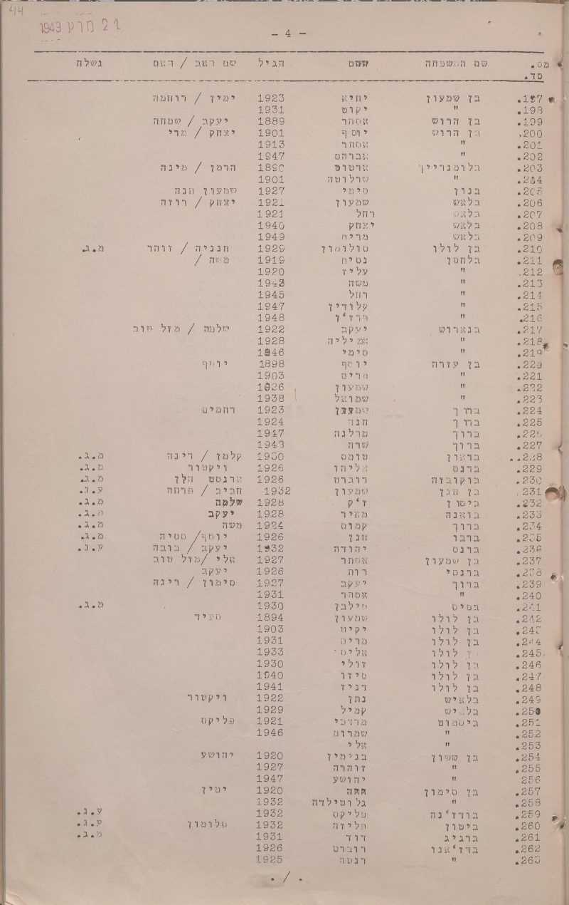
5. המשפחה במסמכים — ומה לא נמצא
5.1 רשימות העולים 1947–1949
ארכיון המדינה, חטיבות S‑104 (1948) ו-גל‑15492 עד גל‑15494 (1947–1949), דרך אוסף Google Pinpoint:[5] 29 קבצים אותרו (חלקם מפוצלים לכמה חלקי-קובץ באוסף); ב-20 קבצים ארכיוניים (21 חלקי-קובץ, שלושה מהם נקראו חלקית) נקראו כל העמודים שבהם ה-OCR מזהה "הרוש", "ארוש" או "בנארוש"; ב-9 קבצים נוספים (ובהם ארבעה קבצי S-104 של 1948), וכן בחלקים שניים ושלישיים של שלושת הקבצים שנקראו חלקית, כלי האיתור לא החזיר עמודים כלל, והם לא נקראו; היחידה: קובץ ארכיוני — 20 מתוך 29. לא נמצא בלוק "בן הרוש מרדכי" עם ההורים יונה/יקוט. הממצא השלילי מדורג ככל הנראה בלבד: ה-OCR של הרשימות עמודתי ומשבש שיוך שורות, חיפוש ביטויים מדויקים אינו עובד בכלי, ותשעה מ-29 הקבצים (ושלושה חלקים) לא נקראו. פירוט הכיסוי בסעיף 9.4.
5.2 פנקס אליאנס מכנאס 1953 — אחותו אסתר
משנמסר שמרדכי נולד במכנאס, חיפוש ממוקד באינדקס IGRA לפנקסי אליאנס — שם משפחה מאשכול Benharoch עם שמות ההורים Yona ו-Yacot — העלה רשומה אחת, בפנקס בית הספר לבנות של אליאנס במכנאס לשנת 1953, מספר סידורי 3076 (שורה 26 בעמוד):[10]
| שדה | קריאה | דירוג |
|---|---|---|
| שם | Benarroch Esther | מאומת — קריאה ברורה |
| גיל | 5 ans (חמש שנים) | מאומת — הכותרת: «DATE DE LA NAISSANCE ou, à défaut, AGE APPROXIMATIF» (תאריך הלידה או, בהיעדרו, גיל משוער); שנת לידה ~1948 נגזרת — ככל הנראה |
| הורים | Yona · Yacot | מאומת — קריאה ברורה; העמודה: «NOM DES PARENTS OU DES TUTEURS DES ENFANTS» — הורים או אפוטרופוסים |
| מגורים ומקצוע ההורים («DOMICILE ET PROFESSION DES PARENTS OU DES TUTEURS») | Commerçant V. Nouvelle — סוחר, העיר החדשה (Ville Nouvelle) של מכנאס; העמודה היא של ההורים, לא של האב דווקא | ככל הנראה — קיצור |
| כניסה | "כנ"ל" מהשורות שמעל — אוקטובר 1953 | ככל הנראה |
| יציאה וסיבה | "55" (חודש לא פוענח) · a quitté (עזבה) | ככל הנראה — כתב יד קטן |
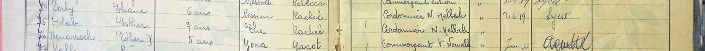
הצירוף Yona + Yacot בשם משפחה בנארוש הוא היחיד מסוגו באינדקס (בין כ-455 רשומות של האשכול; IGRA, 11.09.2026)[9], והוא תואם את שמות ההורים שמסרה המשפחה. הזיהוי של אסתר כאחותו של מרדכי מדורג כמעט ודאי, ומתחזק ברשימת העולים שלהלן, שבה אסתר ילידת 1948 רשומה כבתם של יונה ויקוט — ובאישור המשפחה.
הערה על מה שלא נמצא: מרדכי עצמו לא אותר בפנקסי אליאנס. באשכולות Benharoch/Benarroch ו-Haroch/Harroch נבדקו כל הרשומות בשנים 1937–1946, עם השם הפרטי Mardochée ובלעדיו, ולא נמצא נער יליד 1929–1933 מהאשכול במכנאס.[9] ייתכן שלמד בבית ספר אחר (תלמוד תורה, "אם הבנים", או בית ספר צרפתי), או שנרשם בשם אחר. הממצא השלילי מדורג ככל הנראה (N-2).
5.3 רשימת העולים של "ארצה", 11.6.1956 — ההורים והאח
חיפוש "יונה יקוט" ברשימות העולים של ארכיון המדינה העלה את קובץ מאי–יוני 1956 (גל‑15499/1), ובו הרשימה שכותרתה «"ארצה" מיום 11.6.56» — ככל הנראה שם האונייה — עמוד 4, שורות 187–201:[11]
| # | שורה | קריאה | דירוג |
|---|---|---|---|
| 187–188 | בן-הרוש יעקב · 1933 · יונה/יקוט · מרוקו · ת.ע. 13785 · כן · צפת | מרי 1936 (הקרבה — ראו שורת "קרבה" להלן) | מאומת — הקריאה |
| 196–201 | בן-הרוש יונה · 1912 או 1918 · מרדכי/מרים · מרוקו · ת.ע. 13787 · כן · צפת | יקוט 1918 · גבריאל 1942 · ז'וליט 1943 · סלומון 1945 · אסתר 1948 (הקרבה — ראו שורת "קרבה" להלן) | מאומת — הקריאה; למעט הספרה האחרונה בשנת יונה, שמודפסת בהקשה כפולה: צורתה קרובה ל-2 של "1942" ושונה מה-8 הנקייה של "1918" ביקוט — ככל הנראה 1912 |
| ב.נ. | המספרים 107492–107495 מודפסים בעמודה נפרדת ואינם מיושרים לשורות; לא ניתן לשייכם | טעון אימות | |
| קרבה | לרשימה אין עמודת קרבה (העמודות: מס' סד' · המשפחה והשם · הגיל — ובה שנות לידה · אב/אם · ארץ מוצא · מס' ת.ע. · בוטח לקו"ח · בנמל נשלח ל-); "אשתו" ו"ילדיהם" נגזרים מרצף הבלוק וממספר ת.ע. משותף | כמעט ודאי — היקש מבני |
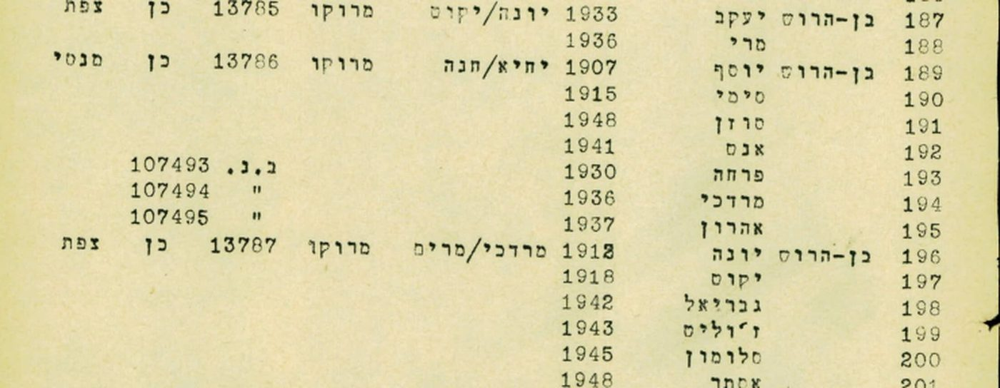
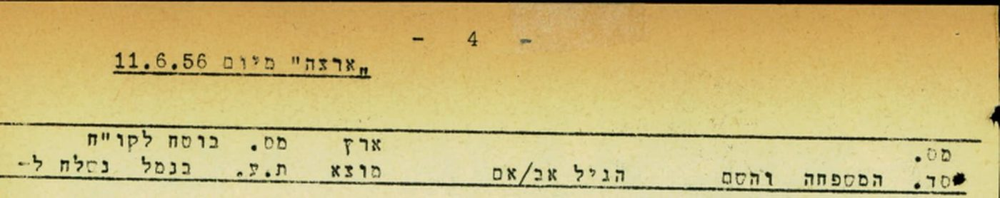
מה הרשומה קובעת. שני בלוקים סמוכים, שניהם ממרוקו ושניהם נשלחו לצפת: יעקב (1933), שהוריו יונה ויקוט, ויונה (1912/1918) ויקוט (1918) עצמם עם ארבעה ילדים — ובהם אסתר ילידת 1948, היא אסתר מפנקס אליאנס. הזיהוי של הבלוק כמשפחתו של מרדכי מדורג כמעט ודאי: שמות ההורים שמסרה המשפחה, עיר המוצא (דרך פנקס אליאנס), התאמת אסתר בין שני מסמכים בלתי תלויים — ואישור המשפחה, שזיהתה את גבי (גבריאל), יעקב ואסתר, "וכנראה גם השאר".[4] הרשומה מוסיפה שנות לידה לחמשת האחים והאחיות שהמשפחה מכירה — יעקב (1933, נשוי למרי ילידת 1936), גבריאל (1942), ז'וליט (1943), סלומון (1945) ואסתר (1948) — ואת שמות הוריו של יונה — מרדכי ומרים; ייתכן שמרדכי נקרא על שם סבו (ככל הנראה; אף שלפי המשפחה לא היה הבכור — קריאה על שם סב אינה שמורה לבכור); ותאריך העלייה של ההורים — יוני 1956, חמישה חודשים אחרי משפחת דהן.
יקוט ופנינה. המשפחה מסרה תחילה שאמו של מרדכי היא "יקוט", ולאחר מכן "פנינה", ולבסוף אישרה (12.09.2026): במרוקו קראו לה יקוט, בישראל פנינה. בשני המסמכים — פנקס 1953 ורשימת 1956 — היא Yacot / יקוט. (השם יָקוּת פירושו אבן חן, ופנינה הוא עברוּת מקובל שלו — ידע כללי, ללא מקור.) אותה אישה — ככל הנראה (המסמכים: יקוט; "פנינה" — מהמשפחה בלבד).
מה היא מעוררת. שנת הלידה של יונה: הספרה האחרונה מודפסת בהקשה כפולה ונקראת 1912 או 1918 — והמשפחה מוסרת 1898. עם שני ילדים בכורים שלא עלו (ניסים ומרים) לפני מרדכי יליד 1928, שנת לידה סביב 1898–1905 סבירה יותר משתי הקריאות של הרשימה; שנות הלידה ברשימות נרשמו מפי העולים, ולעיתים בגיל "מעוגל". וכך גם 1918 של יקוט: אישה ילידת 1918 הייתה בת 10 בלידת מרדכי (1928), ולפניו נולדו ניסים ומרים — הרשימה עיגלה, כנראה, את שני ההורים כלפי מטה; שנת לידתה — טעון אימות. השאלה פתוחה עד שיימצא מסמך — תעודת פטירה או רשומת קבורה בהר המנוחות (M-T5). המשפחה מסרה גם שמרדכי הוסיף לגילו שנה-שנתיים כדי להתגייס, אך לדבריה שנת הלידה במשרד הפנים היא כנראה 1931. באותו עמוד גם יוסף בן-הרוש (1907, הורים יחיא/חנה) עם בני ביתו — ובהם מרדכי, יליד 1936: שם זהה לנושא הדף, באותו עמוד ממש. הוא אינו מרדכי שלנו — עלה ב-1956 ולא ב-1947/48, הוריו יחיא/חנה ולא יונה/יקוט, בן 20 ביוני 1956 ובן 11–12 ב-1947/48 — נשלל; משפחת יוסף היא משפחה אחרת לפי שמות ההורים, ייתכן קרובה רחוקה — לא נבדק.
ומה זה אומר על מרדכי. אם ההורים היו במכנאס ב-1953 (אסתר בבית הספר) ועלו ממרוקו ביוני 1956, הרי שמרדכי — שעלה לפי המשפחה ב-1947 או ב-1948 — עלה לבדו — לפי המשפחה נער בן 16–17 (על בסיס 1931; לפי 1928 — בן 19–21); המשפחה אישרה: בעליית הנוער, ללא ההורים; דרך העלייה (אונייה או מטוס), הנמל, וקפריסין או עתלית — לא ידועים. זה מכוון את החיפוש אחר רשומת העלייה שלו: תיקי עליית הנוער בארכיון הציוני המרכזי (ובהם, בדרך כלל, כרטיס אישי עם תאריך לידה, שמות הורים וכתובת במרוקו), ורשומת עתלית 39404 — ולא רשימות משפחתיות בנמל חיפה. ההורים, לאחר צפת, עברו לתל אביב–יפו ונקברו בהר המנוחות בירושלים (משפחה). הנימוק הנסיבתי למועמד ממגדים (מושב עולים מצפון אפריקה, 1949) נשקל בפרק 3 — פעם אחת.
5.4 רשומת העלייה — רשפים, 22.6.1949, ועתלית
רשפים. רשימת "העולים שהגיעו אחרי 1 ליוני כחבורת עולים" של קיבוץ רשפים (השומר הצעיר, דואר עפולה), מסמך מ-19.9.1949:[3] שמונה צעירים ילידי 1924–1931 מטוניס וממרוקו, כולם הגיעו ב-22.6.1949, בית עולים "סנט-לוקס"(?); שורה 2 — בן-ארוש מרדכי, 1927, מרוקו; בעמודות "הנמצא בקיבוץ" — "לא", "לאן הלך" — "צבא". הרשומה נשללה במהדורות 1–14 בגלל פער של ארבע שנים מ-1931. משנמצאו מסמכי מכנאס — אביו מוסר באוקטובר 1949 שבנו בן 22, ותעודת הקהילה במרץ 1950 "כבן 22" (5.5) — 1927 הוא בדיוק הגיל שבמסמכים; והיציאה לצבא היא מה שהמשפחה זוכרת ("התגייס מיד"). כתב העדות אומר שמרדכי עזב את מכנאס "להתיישב בפלשתינה" — ניסוח שיהודי מרוקו המשיכו להשתמש בו גם אחרי 1948, ואינו מכריע לגבי המועד. הזיהוי — ככל הנראה: שם, שנת לידה, מוצא ויציאה לצבא מתיישבים; מה שחסר — שמות הורים (אין ברשימה) ומסמך נמל. מה שיכריע: רשימת העולים של ארכיון המדינה ליוני 1949 (גל-15493/8) בעמודי הגעת 22.6.1949 — הקובץ נקרא בעבר בחיפוש "הרוש/ארוש" ולא נמצא, וייבדק עכשיו עמוד-עמוד לפי התאריך (פרק 7, פעולה 3); ותיקו האישי בארכיון צה"ל.
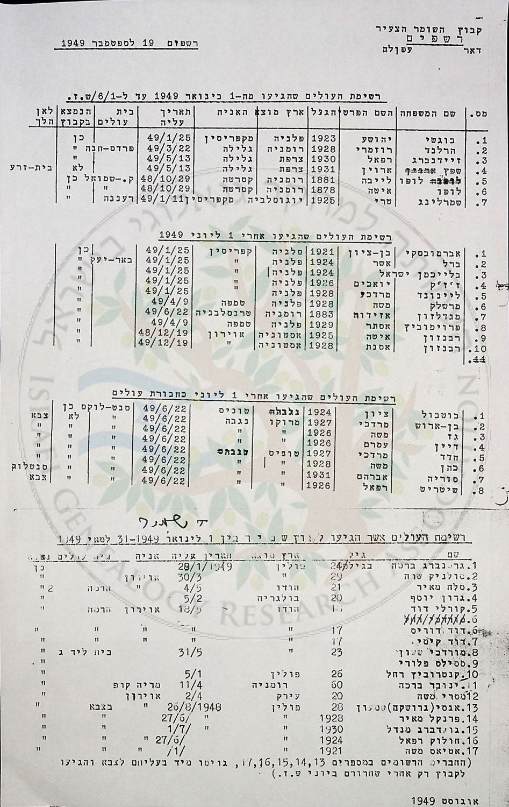
עיתונות (JPress, 2009–2011): אין מודעת אבל (N-4).[8] IGRA קבורות: אין.[8] IGRA, מסד המעפילים עתלית (1932–49): רשומה "מרדכי בן הרוש" (מסמך 39404), ללא שנה וללא פרטים באינדקס[12] — מועמד לרשומת העלייה של נער שעלה לבדו (להבדיל ממועמד מגדים, שהוא לרשומת שינוי השם); דורש פנייה לארכיון עתלית (פרק 7, פעולה 3). אתר חברה קדישא תל אביב‑יפו: מחזיר נתוני דוגמה בלבד (מקום הקבורה, ירקון, ידוע מהמשפחה ואינו ממטרות הדף).
5.5 מסמכי מכנאס, 1949–1950 — מרדכי עצמו
המשפחה שמרה מסמכים מקוריים ומסרה את צילומיהם (12–13.09.2026): עשרה פריטים (מקורות 15–17, 19–25) בסעיפים (א)–(ט). שני הראשונים נערכו במכנאס אחרי שמרדכי כבר היה בארץ, וסביר שהוזמנו ממנו — או בשבילו: תעודת הקהילה (מרץ 1950) אולי לקראת הלסה-פסה של אוגוסט 1950 (ו), וכתב העדות על רווקותו — שאושר במכנאס רק אחרי מתן הלסה-פסה — ככל הנראה לנישואין. השאר נכתבו או ניתנו בישראל.
(א) תעודת ועד הקהילה היהודית במכנאס, 7.3.1950[15] — טופס בולים (20 פרנק, CV 94906), מכונת כתיבה, עם תצלום מהודק: «Je soussigné, Président de la Communauté Israélite de Meknes, certifie que Monsieur Mardoch BENARROCHE, fils de Yonas BENARROCHE et de Yacoth HAYOUN, âgé d'environ vingt deux ans, et dont photo ci-contre, est né à MEKNES (Maroc) et qu'il est de nationalité Marocaine» — "אני החתום מטה, נשיא הקהילה היהודית של מכנאס, מאשר שמר מרדוך בנארוש, בן יונאס בנארוש ויאקות חיון, כבן עשרים ושתיים, שתצלומו לצד, נולד במכנאס (מרוקו) והוא בעל אזרחות מרוקנית". חתום: סגן הנשיא, בשם הנשיא; חותמת "Comité de la Communauté Israélite de Meknès"; אימות חתימה של שירותי העירייה, 9.3.1950.
| שדה | קריאה | דירוג |
|---|---|---|
| שם | Mardoch BENARROCHE | מאומת — דפוס |
| הורים | Yonas BENARROCHE · Yacoth HAYOUN | מאומת |
| גיל | "כבן 22" במרץ 1950 → יליד 1927/28 | מאומת (הקריאה) · שנת הלידה — ככל הנראה (גיל משוער) |
| מקום לידה, אזרחות | מכנאס; מרוקנית | מאומת |
| תצלום | גבר צעיר בכובע רחב שוליים, חליפה ועניבה | — |
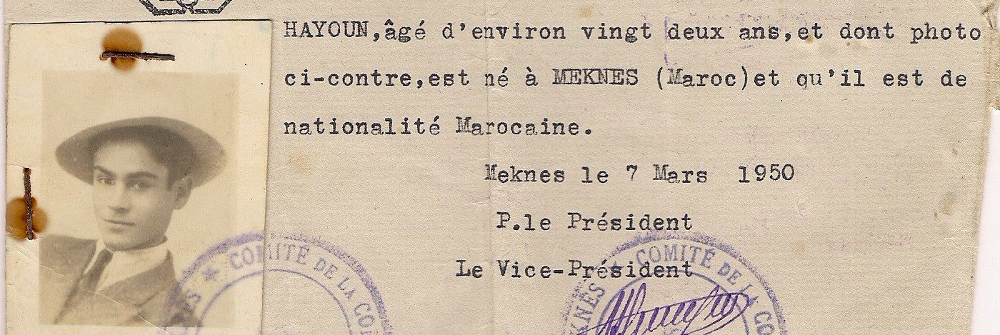
(ב) תרגום צרפתי מאושר של כתב עדות עברי, 10.8.1950[16] — שני דפי בולים (CX 62342), כתב יד, ובעמוד 1 תצלום מהודק (אותו תצלום עם הכובע כבתעודת הקהילה): «Traduction d'un acte hébraïque». תוכן: לפנינו — שלושה, ששניים מהם החתומים מטה («trois dont deux soussignés») — הופיעו מסעוד דיין בן דוד המנוח וסלומון בן מנחם בהלול, והעידו בצורת עדות סדירה ומדויקת שידוע להם היטב כי מרדכי בן יונה בנהרוש ובן יאקות בת דאוד אוחיון («Mardochée fils de Yona Benharrosh et de Yakot Ben Daoud Ohayon») הוא יהודי יליד מכנאס, אזרח מרוקו, ומעולם לא נשא אישה עד היום שבו עזב את עירנו להתיישב בפלשתינה. ועוד — יונה בנהרוש הצהיר לפנינו שבנו מרדכי בן עשרים ושתיים כיום. נחתם במכנאס, א' בחשוון תש"י (24.10.1949). חתמו: שמואל חליווה, דוד משאש (סופרי בית הדין). "לתרגום נאמן", מכנאס, 10.8.1950, מס' 2080, חותמת: מזכיר בית הדין הרבני, מתרגם מושבע, מכנאס ("Chalom …" — הקריאה חלקית); אימות חתימת "נחמני שלום"(?) בעירייה, 11.8.1950; אימות מזכירות מחוז מכנאס, 2[1?].8.1950 (הספרה השנייה מוסתרת בחותמת).
| שדה | קריאה | דירוג |
|---|---|---|
| הנושא | Mardochée fils de Yona Benharrosh et de Yakot Ben Daoud Ohayon | מאומת — כתב יד ברור |
| אמו | יאקות בת דאוד אוחיון — שם נעוריה אוחיון, אביה דוד | מאומת (במסמך) · הזיהוי כאמו של מרדכי — כמעט ודאי (Yona + Yacot, מכנאס, כמו בפנקס 1953 וברשימת 1956) |
| מצב אישי | רווק עד עזיבתו את מכנאס לארץ ישראל | מאומת (כעדות) |
| גיל | "בן 22" באוקטובר 1949, מפי אביו → יליד 1926/27 | מאומת (הקריאה); שנת הלידה — ככל הנראה |
| תאריך העדות | א' בחשוון תש"י = 24.10.1949 | מאומת |
| העדים והחותמים | מסעוד דיין בן דוד ז"ל; סלומון בן מנחם בהלול; שמואל חליווה; דוד משאש | מאומת |
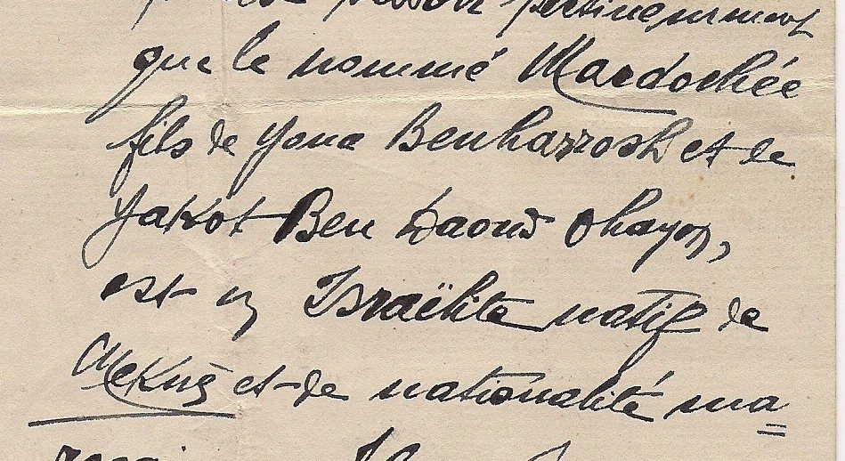
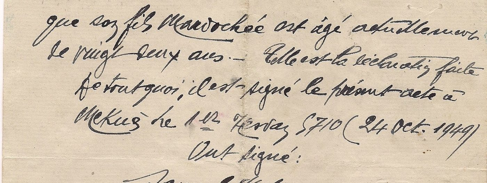
(ג) שתי הקדשות על גבי תצלומים — 29.8.1949 (חתומה "בן הרוש מרדכי") ו-1.7.1951[17] — עיפרון, כתב רהוט עברי-מגרבי, שני פריטים. הפריט הראשון (צילום חד יותר נמסר 13.09.2026): שש–שבע שורות ביהודית-ערבית (טרם תורגמו; השורה השלישית נראית כ«מן ענד מרדכי» — "מאת מרדכי" — לבדיקת המתרגם), ומתחתן «Le 29/8(?)/49» (ספרת החודש מכוסה בסלסול החתימה) וחתימה: בן הרוש מרדכי — כלומר מרדכי חותם על הקדשה ב-29.8.1949, חודשיים אחרי הגעת חבורת רשפים (22.6.1949); לפי אותה רשימה (19.9.1949) כבר לא היה בקיבוץ ויצא לצבא — מועד היציאה אינו רשום. דירוג: מאומת (תאריך וחתימה); התוכן — טעון תרגום. התצלום עצמו נמסר 13.09.2026: מרדכי, צעיר, פוסע לעבר המצלמה ברחוב עירוני (מדרכה, חנויות עם שלטים, עצים, עוברי אורח) בחולצת חאקי עם כתפיות וכיסי חזה ומכנסי חאקי — לפי המשפחה מדי צה"ל, ונשלח להוריו במרוקו; אין דרגות או סמל יחידה נראים, ולכן "מדים" — ככל הנראה (חולצה צבאית של התקופה; הכתובת על הגב). התאריך שעל הגב, 29.8.1949, נותן לתצלום תאריך-לכל-המאוחר: מרדכי בישראל, בלבוש צבאי, חודשיים אחרי הגעת חבורת רשפים ש"יצאה לצבא" — התמיכה החזקה ביותר עד כה ברשומת רשפים ובעדות המשפחה על גיוס מיידי. העיר לא זוהתה (שלט חנות חלקי באותיות לטיניות). הפריט השני — המשפחה קראה (12.09.2026): «זאת תמונה אני והחברה של החבר שלי. אני נותן לכם אותה בתור מזכרת שלי ושלו, וגם הוא מהעיר שלנו (חתימה) 1.7.51». הכותב אינו מזוהה בוודאות: ייתכן שזה מרדכי, השולח להוריו תצלום שלו עם חברתו של חברו בן מכנאס; וייתכן שהכותב הוא חבר של מרדכי, והתצלום מראה את הכותב עם חברתו של מרדכי, ו"גם הוא מהעיר שלנו" מוסב על מרדכי. השפה ("אני נותן לכם אותה") מכוונת לנמענים רבים — משפחה. השוואת החתימות אינה מכריעה — בפריט הראשון שם קריא, בשני שרבוט בלולאה; מה שתומך במרדכי: אותו כתב רהוט עברי-מגרבי בעיפרון בשני הפריטים, והפנייה למשפחה. הכותב הוא ככל הנראה מרדכי; התאריך 1.7.1951 — מאומת. התצלומים עצמם — אם נשמרו — לא נמסרו (פרק 7, פעולה 7).
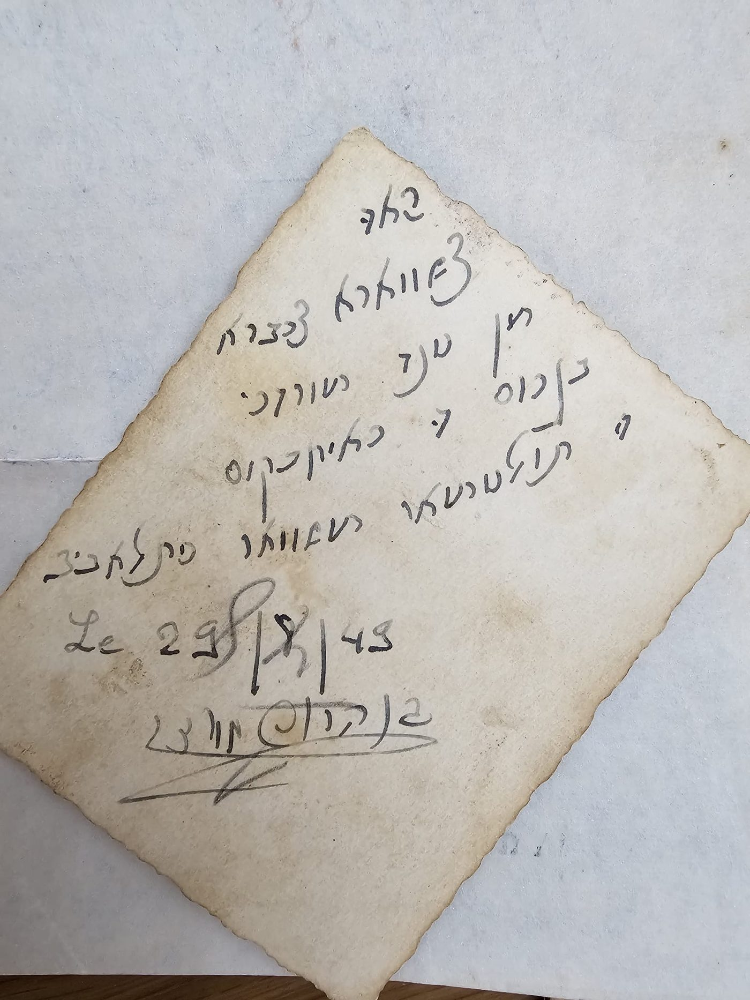
(ד) מעטפה רשומה, 1.8.1956 — הפועל המזרחי; ומכתב בכתב ידו למנהל מעברת טירה[19][20] — מעטפה מודפסת של "הפועל המזרחי בארץ ישראל, תל-אביב, רח' אחד העם 108, ת.ד. 431", ועליה בכתב יד: «לכבוד / בן הרוש מרדכי / צריף מס' 171 / מעב' טירה הכרמל»; תווית דואר רשום «בן דור · Ben Dor · 2684» וחותמת תאריך «בן דור · 1.8.56»; חותמת שנייה, חלקית. כלומר באוגוסט 1956 מרדכי גר בצריף 171 במעברת טירת הכרמל — חוף הכרמל, כ-15 ק"מ ממגדים ומעתלית; המשפחה (13.09.2026): מעברת טירה הצפונית, מחנה ד', 1956 ואולי שנה-שנתיים קודם, עם אשתו הראשונה חנה — וקיבל דואר רשום מהפועל המזרחי (תנועה שהפעילה מחלקות קליטה ודיור). עמו — מכתב בכתב ידו, לא מתוארך, בעברית טובה, אל «לכ' מר ויינר, מנהל מעברת טירה צפונית, שלום רב לך»: לאחר ארבעה חודשים מפגישתם, שבה הבטיח לטפל "בעניין הדיור שלי, מה שמגיע לי בתור עולה חדש כמו כל עולה חדש שמגיע לארץ"; הכותב "גר אצל הורי" ואינו יכול להמשיך כך, מבקש תשובה "אם יש לי איזה סיכויים או לא", ומסיים: «ואם לא תהיה לי ברירה אחרת, אני עלול לדרוש בחזרה למעברה שהיינו — טירה צפונית». בראש הדף, בשורת הסימוכין: "בתשובה נא להזכיר: בן הרוש מרדכי, רח' בית ה[—] 28 ת." (אולי "ת.א."; לא נקרא). אין חתימה — הדף נשאר בידי המשפחה, כנראה טיוטה או העתק. המכתב קושר את מרדכי, במילותיו שלו, למעברת טירה (טירת הכרמל) שבמעטפה, ומתוארך אחרי שעזב אותה — כלומר אחרי אוגוסט 1956 — ו"גר אצל הורי" (ההורים בארץ מיוני 1956). דירוג: המעטפה — מאומת (הכתובת, התאריך); שהמכתב הוא בכתב ידו של מרדכי — כמעט ודאי (בגוף ראשון, שמו וכתובתו בשורת הסימוכין, נשמר אצל המשפחה; אין חתימה להשוואה); מקום "בן דור" — טעון בירור (אולי שם משרד הדואר של טירת הכרמל עצמה בשנות החמישים — אם כן, המכתב נשלח מקומית).
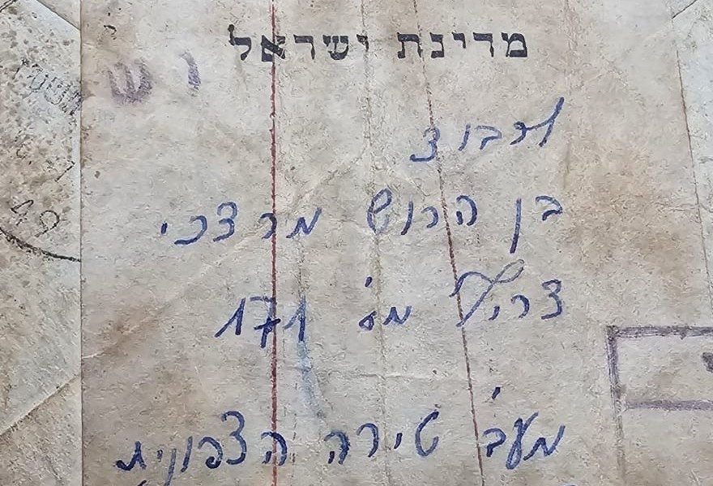
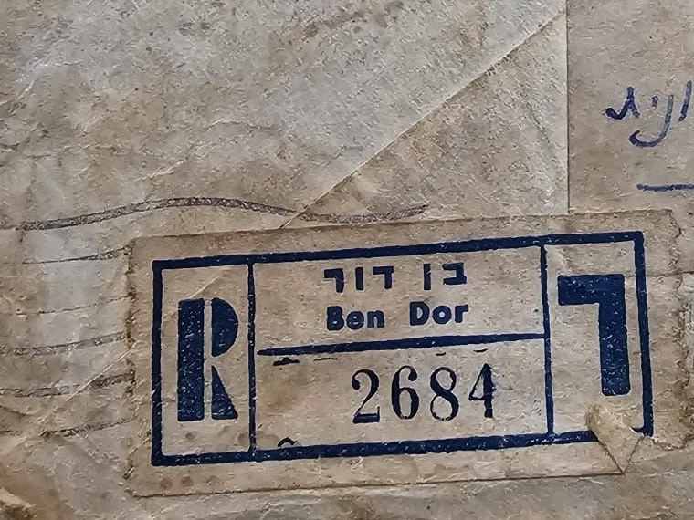
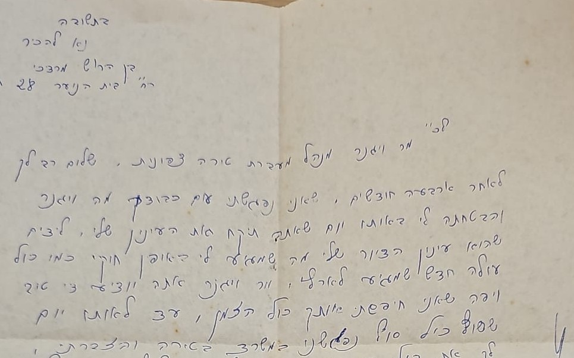
(ה) צו בית משפט השלום בת ים–חולון, 20.12.1990 — שנת הלידה 1928[21] — «בבית משפט השלום בבת-ים · ת.א. 2535/90 · המבקש: בן-הרוש מרדכי · המשיב: היועץ המשפטי לממשלת ישראל · צו · לאחר עיון בבקשה ובתצהיר המצורף אליה ולאחר שמיעת המבקש ועדיו, ניתן היום צו הקובע, שהמבקש נולד בשנת 1928. תעודת הזהות (מס' [—]) תתוקן בהתאם. ניתן היום 20.12.90 — שופט בית משפט השלום»; חותמות "העתקה נכונה, 20.12.1990". מספר הזהות שבמסמך מושחר בעותק המקומי (9.6). דירוג: הצו — מאומת (מסמך שיפוטי); שנת הלידה 1928 — כמעט ודאי: הכרעה שיפוטית על סמך תצהיר ועדים, 62 שנה אחרי הלידה, ללא מסמך לידה — אך מתיישבת עם מסמכי 1949–1950 (22; "présumé 1928") ועם רשפים (1927). הצו אינו אומר מה היה כתוב בתעודת הזהות קודם; "1931" — מזיכרון המשפחה, ומאישור ההסתדרות מיולי 1950 (ח), שבו כבר נרשם 1931.
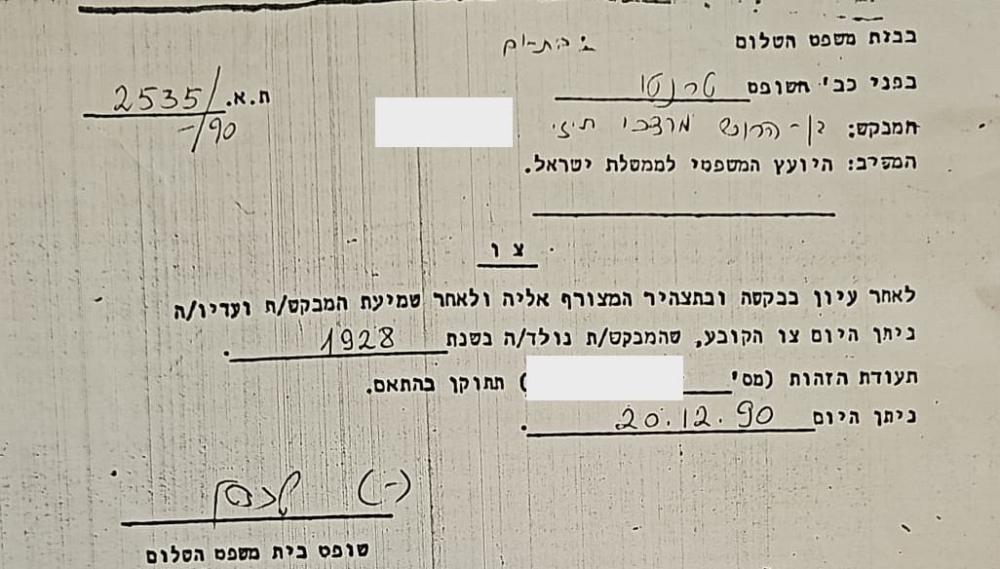
(ו) לסה-פסה (Laissez-passer) מס' 340, הקונסוליה הכללית של צרפת בירושלים, 11.8.1950[22] — טופס מודפס של הקונסוליה, מכונת כתיבה, תצלום (ללא כובע, חולצה משובצת), בולי "Affaires étrangères" 100 ו-500 פרנק, חותמות הקונסוליה, חתימת סגן הקונסול: «Laissez-passer valable pour un seul voyage · Monsieur Mardoché BENARROCHE, né présumé en 1928 à Meknès (Maroc), de nationalité marocaine, protégé français. Profession: cordonnier. Le présent laissez-passer est valable six mois et pour un seul voyage de retour au Maroc, via la France, pour permettre à l'intéressé de regagner son domicile à Meknès, rue du cimetière, nouveau Mellah» — "לנסיעה אחת בלבד: מר מרדושה בנארוש, נולד כמשוער ב-1928 במכנאס (מרוקו), אזרח מרוקו, בן-חסות צרפתי. מקצוע: סנדלר. תקף שישה חודשים ולנסיעת חזרה אחת למרוקו, דרך צרפת, כדי לאפשר למבקש לשוב לביתו במכנאס, רחוב בית הקברות, המלאח החדש." נעשה בירושלים, 11.8.1950.
| שדה | קריאה | דירוג |
|---|---|---|
| שם | Mardoché BENARROCHE | מאומת |
| לידה | "né présumé en 1928" — נולד, כמשוער, ב-1928, מכנאס | מאומת (הקריאה); 1928 — עולה בקנה אחד עם צו 1990 |
| מעמד | אזרח מרוקו, בן-חסות צרפתי (protégé français) | מאומת |
| מקצוע | סנדלר (cordonnier) | מאומת — נתון חדש |
| כתובת במכנאס | rue du Cimetière, nouveau Mellah — רחוב בית הקברות, המלאח החדש | מאומת — כתובת הבית במכנאס, 1950 |
| מטרה | נסיעה חד-פעמית חזרה למרוקו דרך צרפת, תוקף שישה חודשים | מאומת |
| מקום ותאריך | ירושלים, 11.8.1950 | מאומת |
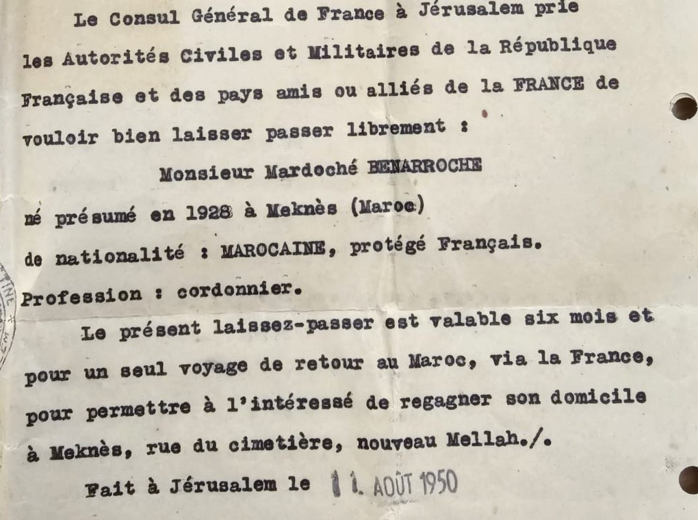
מה זה משנה. באוגוסט 1950 מרדכי — בישראל (המסמך הונפק בירושלים) — הצטייד במסמך נסיעה לחזרה למרוקו. תעודת הקהילה (מרץ 1950) יכולה הייתה לשמש לבקשה; כתב העדות לא — תרגומו נחתם במכנאס ב-10.8.1950 ואושר בעירייה ב-11.8 ובמזכירות המחוז אחר כך, כלומר עוד היה במכנאס ביום שהלסה-פסה כבר ניתן בירושלים; הוא נועד ככל הנראה לנישואין (כתב העדות הוא על רווקותו). כלומר ייתכן שמרדכי חזר למרוקו בסתיו 1950 ושב לישראל אחר כך — ואז רשומת רשפים (יוני 1949) היא העלייה הראשונה, ויש רשומת עלייה שנייה שטרם נמצאה (בין 1951 ל-1954, לפני רישום מגדים). ההקדשה מ-1.7.1951 (ג) — אם היא שלו — נכתבה אולי במרוקו. ואולי גם "עולה חדש" במכתב לוויינר (אם כי ב-1956 הביטוי מתאים גם למי שעלה ב-1949). חיפוש ראשון (13.09.2026): Pinpoint "בן ארוש מרדכי" + 1928 / + יונה — אין הגעה שנייה 1950–1955 (פרק 7, פעולה 3ב). הבית במכנאס: רחוב בית הקברות, המלאח החדש — הכתובת הראשונה של המשפחה שיש לנו (פנקס 1953: "V. Nouvelle" — העיר החדשה; שתי הכתובות יכולות להתיישב: משפחה במלאח החדש ועסק בעיר החדשה, או מעבר בין 1950 ל-1953).
(ח) אישור חברות זמני בהסתדרות הכללית — לשכת המס בחיפה, "מחנה עולים", 25.7.1950[24] — טופס מודפס «ההסתדרות הכללית של העובדים העברים בארץ-ישראל · לשכת המס ב-חיפה מחנה עולים · אישור חברות זמני מס' 33247», ממולא ביד: «המשפחה: בן הרוש · השם: מרדכי · שם האב: יונה · שם האם: יקוט · נולד בשנת: 1931 · המקצוע: סנדלר · נרשם ביום 25 לחודש יולי(?) שנת 50»; חותמת «לשכת המס חיפה» וחתימת ב"כ לשכת המס. (הפנקס עצמו — קופת חולים של ההסתדרות, לפי המשפחה — לא צולם בשלמותו.) מה הוא מוסיף: (1) המסמך הישראלי המוקדם ביותר שבידינו, ובו כבר 1931 — חודש לפני שהקונסוליה הצרפתית בירושלים כתבה "présumé 1928" (11.8.1950): שתי שנות הלידה נמסרו במקביל, באותו קיץ, לשני גופים שונים; "1931" הישראלי אינו אפוא טעות מאוחרת של משרד הפנים אלא הצהרה מ-1950. (2) שמות ההורים יונה ויקוט ומקצוע סנדלר — כמו בלסה-פסה — מאומת: זה אותו אדם. (3) הרישום נעשה בלשכת המס של "מחנה עולים" בחיפה ביולי 1950 — כלומר בקיץ 1950 מרדכי היה במסגרת של עולים בחיפה, אחרי השירות הצבאי (אוגוסט 1949) ולפני הלסה-פסה; מתיישב עם מעבר דרך מחנה עולים (ואולי עם עלייה שנייה — M-T2). דירוג: המסמך — מאומת; הזיהוי — מאומת (שם, הורים, מקצוע).
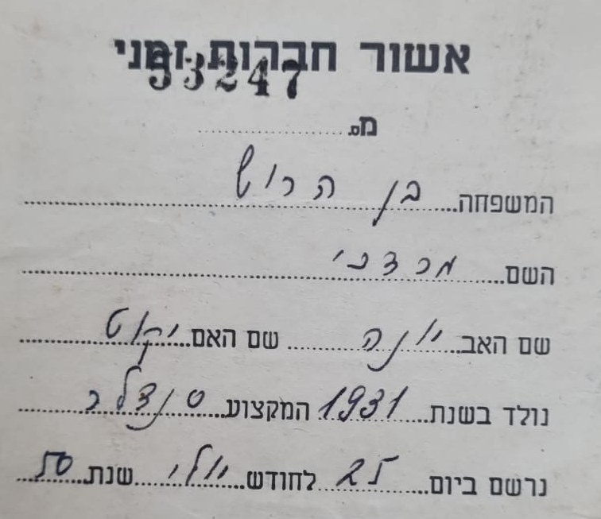
(ט) מעטפה רשומה שנייה — חיפה, 1956, אל "מעברת טירה הצפונית, צריף 171, מחנה ד'"[25] — מעטפה רשמית «מדינת ישראל», תווית דואר רשום «חיפה · HAIFA · 28317», חותמת דואר «חיפה 4 · HAIFA 4 · 1?-?-56»; בכתב יד: «מר [מרדכי] בן הרוש / מעברת טירה הצפונית / צריף 171 מחנה ד'»; בגב — חותמת השולח (דהויה): «משרד ה[דתות?] · [בית] הדין [הרבני] האזורי חיפה(?) · 17 [חודש] 1956 · ת.ד. 716 · טלפון …» וחתימה. מה היא מוסיפה: אישור עצמאי, ממקור שני, לכתובת שבמעטפת "בן דור" — ובנוסף "מחנה ד'" ו"הצפונית", בדיוק כפי שמסרה המשפחה (13.09.2026). אם קריאת חותמת השולח נכונה — בית הדין הרבני האזורי חיפה כתב אליו ב-1956 — הדבר נוגע כנראה לנישואיו הראשונים או לגירושיו (M-T9); טעון אימות (החותמת דהויה). דירוג: הכתובת — מאומת; השולח — טעון אימות.
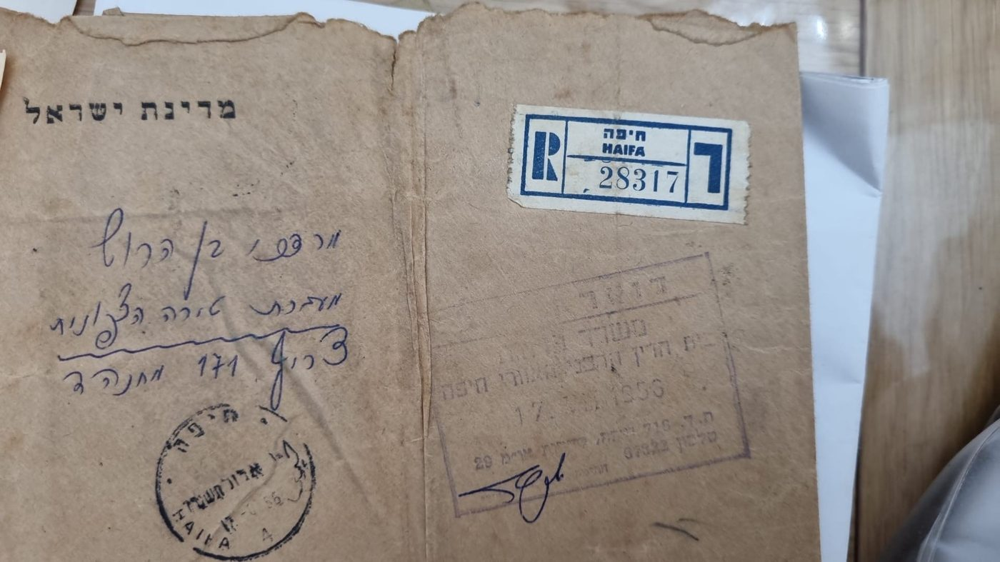
(ז) מכתב ביהודית-ערבית, שני עמודים, לא מתוארך[23] — דיו כחולה, כתב רהוט מגרבי, על גב נייר מכתבים מודפס; הכיתוב, השקוף מבעד לנייר, נקרא בהיפוך (13.09.2026): «JACOB G[…] M.A. · ADVOCATE · 33 MONTEFIORE STREET · P.O.B. 2296 · TEL-AVIV», ובעברית «יעקב ג[…] · עורך-דין · רח' מונטיפיורי 33 · ת.ד. 2296 · תל-אביב» — נייר של משרד עורכי דין בתל אביב, כלומר המכתב נכתב ככל הנראה בישראל, לא במכנאס; פותח «נוה[?]» ובגוף מופיעים מספר שמות; טרם תורגם. הכותב — טעון אימות (מרדכי? קרוב? — ההימצאות אצל המשפחה מתיישבת עם טיוטה או העתק שנשאר אצל הכותב); ולכן הפריט נמנה בין שמונת הפריטים כ"טרם זוהה". דירוג התוכן — טרם (פרק 7, פעולה 7).
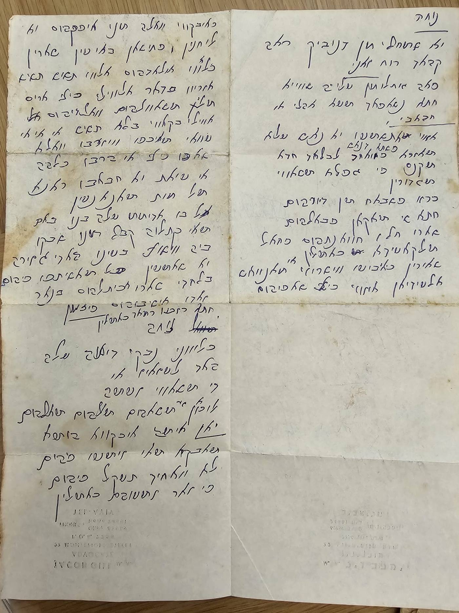
מה המסמכים משנים. (1) שם נעוריה של האם — אוחיון (Ohayon; בתעודת הקהילה Hayoun), בת דוד — נתון חדש, ממסמך, ומכאן דור נוסף: דוד אוחיון, סבו של מרדכי. (2) שנת הלידה: שלושה מסמכים בלתי תלויים — אביו (אוקטובר 1949: 22), ועד הקהילה (מרץ 1950: כבן 22) ורשימת רשפים (1927) — מתכנסים ל-1926/27–1927/28; המשפחה זוכרת 1931 וכי "הוסיף לגילו שנה-שנתיים כדי להתגייס". ההכרעה הגיעה מהמשפחה עצמה: צו בית משפט השלום בת ים–חולון, 20.12.1990 (ה) קובע שנולד ב-1928 ומתקן את תעודת הזהות — 1931, לפי המשפחה, היה הרישום הישראלי המוקדם; המסמכים ממכנאס ורשפים והצו מתיישבים בקירוב: "22" באוקטובר 1949 = יליד 1926/27, "כבן 22" במרץ 1950 = 1927/28, "présumé 1928", רשפים 1927 — הכול בטווח 1927–1928, ו-1928 הוא קצהו. (3) הרווקות עד העזיבה — מתיישבת עם נישואיו הראשונים בישראל (חנה) ומסבירה כנראה את הזמנת המסמך. (4) "עזב את עירנו להתיישב בפלשתינה" — עזיבה לבדו, לפני המשפחה, ממסמך בן התקופה: מאומת. (5) יונה בנהרוש חי ופעיל במכנאס באוקטובר 1949; ביולי 1951 מגיע אל המשפחה תצלום עם הקדשה — ממרדכי או מחבר בן עירו. (6) כתיבי השם במקור: Benharrosh, BENARROCHE, Yonas, Yacoth, HAYOUN. (7) טירת הכרמל, אוגוסט 1956 — מגורים בחוף הכרמל, האזור של מגדים ועתלית, שנה וחצי אחרי רישום מגדים: ראיה נסיבתית חדשה למועמד מגדים (3.2). (8) 1928 — צו 1990 מכריע את שאלת שנת הלידה (כמעט ודאי), והלסה-פסה של 1950 ("né présumé en 1928") מאשר שכך הצהיר כבר אז. (9) מקצוע — סנדלר (1950). (10) נסיעה חזרה למרוקו, 1950 — אפשרות של שתי עליות. (11) 29.8.1949 — מרדכי במדים, בישראל: התצלום שעל גבו ההקדשה החתומה מראה אותו בלבוש צבאי ברחוב עירוני — חודשיים אחרי הגעת חבורת רשפים ויציאתה לצבא: תמיכה חזקה ברשומת רשפים ובעדות המשפחה על גיוס מיידי; ושהתצלום נשלח להוריו במרוקו (משפחה) — מתיישב עם "אני נותן לכם" בהקדשה מ-1951.
6. עץ המשפחה
העץ מוצג בתרשים במקטע העץ. בטקסט:
- מרדכי ומרים בן הרוש — הוריו של יונה (רשימת העולים 1956, עמודת אב/אם) — כמעט ודאי; לא ידוע אם עלו.
- דוד אוחיון — אביה של יקוט (כתב העדות 1949: "יאקות בת דאוד אוחיון") — כמעט ודאי; לא ידוע עליו יותר.
- יונה בן הרוש — אביו; שנת לידה: 1898 (משפחה) / 1912 או 1918 (רשימת 1956, ספרה מוכה כפול) — טעון אימות; מקצוע ההורים: סוחר, העיר החדשה של מכנאס (פנקס 1953 — עמודת "הורים או אפוטרופוסים"); עלה ב"ארצה" ב-11.6.1956, נשלח לצפת; לימים תל אביב–יפו; קבור בהר המנוחות (משפחה). פטירה — טעון אימות.
- יקוט (פנינה) בן הרוש לבית אוחיון — אמו; ילידת 1918 לפי רשימת 1956 — אינו מתיישב עם בן יליד 1928 ושני ילדים בכורים לפניו, טעון אימות (5.3); שם נעוריה אוחיון/חיון, בת דוד (מסמכי מכנאס 1949–1950); "יקוט" במרוקו ובמסמכים, "פנינה" בישראל (משפחה בלבד — ככל הנראה); עלתה עם יונה; תל אביב–יפו; קבורה בהר המנוחות (משפחה). פטירה — טעון אימות.
- ניסים (מקסים) — הבכור; חי במרוקו כמעט עד מותו, נשוי; שלושה ילדים, בצרפת (משפחה, 12.09.2026) — טעון אימות; אינו ברשימת 1956.
- מרים — אחותו הבכורה; נישאה לשמואל רואש; פריז; שניהם נפטרו בפריז ונקברו בישראל — הוא בקריות (חיפה), היא בהר המנוחות, ירושלים; ארבעה ילדים (משפחה, 12.09.2026) — טעון אימות; אינה ברשימת 1956.
- מיכאל מכלוף — אח צעיר ממרדכי; עלה לישראל, לא ידוע מתי (משפחה, 12.09.2026) — טעון אימות; אינו ברשימת "ארצה" 1956, ולכן עלה בנפרד; מקומו בסדר הלידה לא ידוע. מועמד לרשומה: «הרוש מכלוף → הרוש מיכאל», שינוי שם, נפת צפת (העיר שאליה הגיעו ההורים ב-1956), רשימה 3/72, ילקוט הפרסומים 1920 עמ' 1710[18] — טעון אימות: "מכלוף→מיכאל" הוא עברות נפוץ (IGRA: חמישה "מיכאל (מכלוף) הרוש" בשינויי שם 1962–1974 — צפת, חיפה ×2, באר שבע, תל אביב), ואין ברשימה גיל או מספר זהות. הערת זהירות: גם אחיה של יקוט דהן, אמה של מרים, נמסר בשם "מיכאל מכלוף" (אבוטבול) — ובאותו עמוד ילקוט, באותה נפה, גם "אבוטבול מכלוף → מיכאל". שני אנשים בשני הענפים, או בלבול בזיכרון — לבדוק בשתי המשפחות.
- מרדכי בן הרוש — 1928 (צו בית משפט 1990; מסמכי מכנאס 1949–1950 ורשפים 1949: 1927/28; תעודת הזהות עד 1990: 1931) – 2010 (משפחה). מעברת טירת הכרמל, צריף 171 (אוגוסט 1956). כינויו "מרדושי". עזב את מכנאס רווק ולבדו (כתב העדות 1949 — מאומת); לפי המשפחה 1947/48 בעליית הנוער; לפי רשומת רשפים (ככל הנראה) הגיע 22.6.1949 ויצא לצבא. ככל הנראה "מרדושי בנערוש" ממגדים (1954); "מרדושה בן הראש" מירושלים (1963) ככל הנראה נשלל לפי מספר זהות.
- נישואין ראשונים: חנה (אניטה) לבית יפלח (~1953; משפחה — טעון אימות; כ-10–11 אחים ואחיות, אחד מהם שחקן ידוע — ייתכן אהרן איפלה, טעון אימות); בנם יוני (פרטים מזעריים — 9.6).
- נישואין שניים: מרים לבית דהן (1939, מכנאס), תל אביב, ספטמבר 1960 (משפחה) — המחקר על מרים.
- יעקב בן הרוש — 1933 (רשימת 1956); אשתו מרי (1936); עלו ב"ארצה" 1956 לצפת.
- גבריאל (גבי) (1942), ז'וליט (1943), סלומון (1945), אסתר (1948) — רשימת 1956; אסתר גם בפנקס אליאנס מכנאס 1953; המשפחה מזהה את גבי, יעקב ואסתר.
יקוט הוא גם שם אמה של מרים (יקוט דהן לבית אבוטבול). אלו שתי נשים שונות — חמות וכלה בעלות אותו שם פרטי, שם מרוקאי נפוץ; אמו של מרדכי נודעה בישראל, לפי המשפחה, כפנינה.
7. פעולות פתוחות
| # | פעולה | מה זה ישנה | מי |
|---|---|---|---|
| 1 | תמצית רישום של מרדכי ממרשם האוכלוסין "בתוספת פרטי כניסה לארץ, ישוב לידה ושמות קודמים" (נוהל רשות האוכלוסין 2.17.0001, סעיף 4.7)[14] — מכריעה את מועמד מגדים | השאלה ללשכה חדה: האם ז/203321 (מספר הזהות ברישום מגדים, 3.1) הוא מספרו הקודם של מרדכי, והאם "בנערוש" שם קודם שלו? מגישים בלשכה: בת זוג או ילד (קרבה ראשונה), טופס מר/2, ללא תשלום. במקביל: תעודת פטירה (אונליין, קרבה ראשונה) — שמות ההורים ותאריך הלידה הרשום; וצילום התעודה יאמת גם את שלילת מועמד ירושלים (3.4) | משפחה (קרוב מדרגה ראשונה) |
| 2 | שנות הפטירה של יונה ופנינה (הר המנוחות, ירושלים) | רשומת קבורה בהר המנוחות תיתן תאריך פטירה, גיל ושם אב — ותכריע בין 1898 ל-1912/1918; חברה קדישא ירושלים / אתרי מצבות | משפחה, ואז ארכיון |
| 2א | נישואי מרדכי ומרים — תל אביב, ספטמבר 1960 | רישומי הרבנות תל אביב (תעודת נישואין: שנות לידה, שמות הורים, כתובות); עיתונות ספטמבר 1960 | משפחה (תעודה בבית?) / ארכיון |
| 2ד | משפחת אוחיון — דוד אוחיון, אביה של יקוט (מכנאס) | פנקסי אליאנס מכנאס (Ohayon/Hayoun עם אם Yacot? — אחיה של יקוט), רשימות עולים; דור נוסף בעץ | ארכיון |
| 2ה | מרים ושמואל רואש — קבורות בקריות ובהר המנוחות | רשומת הקבורה של מרים רואש לבית בן הרוש תיתן תאריך לידה ושם אב (יונה) — כלומר גם מסמך על יונה; חברה קדישא חיפה/הקריות (IGRA מכסה חלק מבתי העלמין בחיפה) וירושלים | ארכיון |
| 2ב | הנישואין הראשונים — חנה (אניטה) לבית יפלח, הבן יוני; נישאו ~1953 | שנת נישואין ועיר (חיפה/טירת הכרמל?) — יאתרו רישום רבנות; משפחת יפלח: מוצא, עלייה, שמות ההורים והאחים — ובהם השחקן (אהרן איפלה?); IGRA "יפלח": 87 רשומות, רובן ירושלים — לא נמצאה משפחה בטירת הכרמל (13.09.2026); ניסים (מקסים) ומרים — מה עלה בגורלם במרוקו/צרפת | משפחה |
| 2ג | מיכאל מכלוף בן הרוש — האח הצעיר שעלה בנפרד; מועמד: שינוי שם מכלוף→מיכאל הרוש, צפת 1972 | לשאול: האם מיכאל גר בצפת בשנות השבעים? האם באמת אח של מרדכי — או שמא "מיכאל מכלוף" הוא דודה של מרים (אבוטבול)? שנת לידה ושנת עלייה משוערות → רשימות העולים (חיפוש "בן הרוש מיכאל"/"מכלוף" — טרם נמצא ב-Pinpoint); אולי גם הוא בעליית הנוער | משפחה, ואז ארכיון |
| 3 | רשומת העלייה: 22.6.1949? — רשומת רשפים (5.4) מול זיכרון המשפחה (1947/48, עליית הנוער) | רשימת העולים של ארכיון המדינה, יוני 1949 (גל-15493/8) — קריאה עמוד-עמוד של הגעות 22.6.1949 (הקובץ נקרא בעבר רק לפי "הרוש/ארוש"); אם אינו שם — תיק עליית הנוער | |
| 3ב | עלייה שנייה, 1951–1954? — הלסה-פסה מ-11.8.1950 לחזרה למרוקו (5.5, ו) | האם נסע? רשימות העולים 1951–1954 (Pinpoint, כתיבי בן הרוש/בנארוש, יליד 1928); רשימות נוסעים; לשאול את המשפחה אם ידוע על חזרה למרוקו | ארכיון / משפחה |
| 3א | תיק עליית הנוער של מרדכי — אם אכן עלה במסגרתה | הארכיון הציוני המרכזי, תיקי חניכי עליית הנוער (כרטיס אישי: תאריך לידה, הורים, כתובת במכנאס, מוסד הקליטה) — פנייה של בן משפחה; במקביל רשומת עתלית 39404 (מקור 12) | משפחה (בקשה) / ארכיון |
| 4 | 9 הקבצים (ושלושת החלקים) שלא נקראו ברשימות 1947–49 | קריאה עמוד-עמוד (כ-3,000 עמודים) — כדאי אחרי שיהיו חודש עלייה או שם אונייה | ארכיון |
| 4א | 13 הנערים ילידי 1929–1933 באשכול Benharoch בפנקסי אליאנס (N-2) | פתיחת הסריקות ובדיקת שמות ההורים — אם אחד מהם Yona/Yacot, נמצא מרדכי בשם אחר; ובמקביל פנקסי בתי ספר אחרים במכנאס | ארכיון |
| 8 | מסמך סולל בונה, אילת, 1959 ובנוסף: תקופת העבודה באילת (שנות החמישים) | צילום המסמך — תאריכים, תפקיד, כתובת; ארכיון סולל בונה / ארכיון העבודה (מכון לבון) — כרטיס עובד | משפחה / ארכיון |
| 7 | ההקדשות מ-29.8.1949 ומ-1.7.1951 (5.5, ג) והמכתב ביהודית-ערבית (ז) | תרגום היהודית-ערבית (קורא של כתב סופרים מרוקאי): ההקדשה מ-1949 והמכתב — תוכן, נמענים, תאריך, שם הכותב; האם התצלומים עצמם נשמרו | משפחה / חוקר |
| 5 | תעודת פטירה של מרדכי | שמות ההורים וכתיב השם כפי שנרשמו בישראל (שנת הלידה — הוכרעה בצו 1990); קובע את כתיב השם לחיפושים הבאים | משפחה |
| 5א | רישומי הגיוס — התגייס מיד עם עלייתו, 1947/48 (משפחה) | ארכיון צה"ל ומערכת הביטחון — תיק אישי לבן משפחה; יקבע את שנת הלידה שהצהיר עליה ואת כתובתו בשנות החמישים (מגדים?) | משפחה (בקשה) |
| 6 | תעודות העולה 13785 ו-13787 (יעקב; יונה ויקוט) | תיקי העולה ברשות האוכלוסין — תאריכי לידה מלאים, כתובת במכנאס; בן משפחה מדרגה ראשונה | משפחה (בקשה) |
8. סיכום המקורות
ערכים 15–17 ו-19–23 — המסמכים שהמשפחה שמרה, ממכנאס 1949–1950 ומישראל 1950–1990 — הם המסמכים של מרדכי עצמו (ערך 23 — כותבו טרם זוהה); ערך 3 — רשומת רשפים — מועמד לרשומת העלייה; ערכים 10 ו-11 — פנקס אליאנס מכנאס 1953 ורשימת "ארצה" 1956 — הרשומות של משפחתו; ערך 12 הוא רשומת עתלית שטרם נפתחה.
הרשימה המלאה באינדקס המקורות. ערך 1 הוא המועמד לרשומת שינוי השם, וערך 13 — מועמד שני באותו כינוי, שככל הנראה נשלל לפי מספר זהות; ערכים 2, 5, 6, 8, 11 ו-13 נושאים את המועמדים שנשללו; ערכים 5 ו-9 — הסריקות השליליות; ערך 7 — מקור העזר על מגדים.
9. שיטה ומגבלות
9.1 בסיס הראיות
מסמכים מקוריים ממכנאס 1949–1950 שבידי המשפחה (מקור ראשוני — סריקות שמסרה המשפחה); ילקוט הפרסומים (מקור ראשוני מודפס — דרך סריקת IGRA, שמשחירה את עמודת מספרי הזהות בתמונות שהיא מגישה, ודרך סריקות הגיליונות המלאות באתר olaw.org.il, שבהן העמודה גלויה); רשימות העולים של ארכיון המדינה (מקור ראשוני שנקרא דרך OCR רועש); אינדקסים של IGRA (מקור עזר); מידע משפחתי (פרק 2).
9.2 סולם הוודאות
חמש דרגות: מאומת — נקרא ישירות מהמסמך; כמעט ודאי — מסמכים מתכנסים ללא סתירה; ככל הנראה — פרשנות סבירה או קריאה קשה; טעון אימות — לא פוענח או לא נבדק; נשלל — הפרטים ברשומה סותרים. "ככל הנראה נשלל" — סתירה חזקה שאינה מוחלטת. מסמך מדורג בנפרד מן הזיהוי שנשען עליו.
9.3 מוסכמות הכתיב
בן הרוש · בנהרוש · בן-הרוש · בן הראש · בנערוש · בנארוש · בן-ארוס · הרוש — כולם אותו שם בכתיבים שונים; Benharoch / Benharroch / Benarroch בצרפתית של הפנקסים; Benharrosh / BENARROCHE במסמכי מכנאס 1949–1950. אוחיון · חיון — Ohayon / Hayoun. "מרדושי" / "מרדושה" — כינוי חיבה נפוץ של מרדכי בקרב יוצאי מרוקו.
9.4 ממצאים שליליים
| # | שאלה | מקור וכיסוי מדויק | תוצאה | דירוג |
|---|---|---|---|---|
| N-1 | "בן הרוש מרדכי" (~1928; 1931 ברישום הישראלי עד 1990; יונה/יקוט) ברשימות העולים 1947–1949 | ארכיון המדינה/Pinpoint, 29 קבצים ארכיוניים; נקראו עמודי "הרוש/ארוש/בנארוש" ב-20 קבצים (21 חלקי-קובץ): S-104-607/612/613/614; גל-15492/1; 15492/2 (חלק א בלבד); 15492/5 (חלקים א–ב בלבד); 15493/1; 15493/2 (חלק א בלבד); 15493/3–8; 15494/1, /2, /5, /6, /7. 9 קבצים לא נקראו כלל (15492/3, 15492/4, 15494/3, /4, /8, וארבעה קבצי S-104 של 1948: 608–611), וכן החלקים שלא נקראו של 15492/2, 15492/5, 15493/2[5] | אין בלוק תואם | ככל הנראה — סריקה חלקית |
| N-2 | Mardochée Ben Haroch (~1931) בפנקסי אליאנס מרוקו | IGRA: אשכול Benharoch/Benarroch (455 רשומות; 1940, 1941, 1943, 1944, 1946 שנה-שנה + Mardochée בכל השנים) ואשכול Haroch/Harroch (1937–1946 שנה-שנה)[9] | אין Mardochée יליד 1929–1933; 13 נערים ילידי 1929–1933 בשמות אחרים (שמות הורים לא נבדקו). לעומת זאת נמצאה אחותו אסתר (1953, Yona/Yacot) — 5.2 | ככל הנראה — חלקי; מרדכי עצמו לא בפנקס |
| N-3 | "יונה בן הרוש" ב-IGRA | כל המאגרים, עברית ולטינית[8] | אפס ב-IGRA; נמצא ברשימות העולים של ארכיון המדינה ("ארצה" 11.6.1956) שאינן מאונדקסות ב-IGRA — 5.3 | ככל הנראה (ל-IGRA בלבד) |
| N-4 | מודעת אבל 2010 | JPress, כל העיתונים, 2009–2011[8] | אפס | ככל הנראה |
| N-5 | "מרדכי בן הרוש" במסד המעפילים עתלית | IGRA, Immigration Atlit Database — רשומה 39404 קיימת, ללא שנה ופרטים[12] | לא נפתחה — מועמד לרשומת העלייה | טעון אימות |
| N-6 | שכיחות הכינוי "מרדושי" — האם יש "מרדושי בן הרוש" נוסף | IGRA, 12.09.2026, כל המאגרים, לא פונטי: שם פרטי "מרדושי" — 25 רשומות (19 במאגר שינויי השמות); "מרדושה" — 29 (17 בשינויי שמות); שם משפחה "בנערוש" — 1; אשכול Harush (פונטי) בשינויי שמות — 26; פונטי Benharosh + Mordechai — 7[8] | הכינוי נפוץ — 36 רשומות שינוי שם בשמות משפחה רבים; הצירוף כינוי + בן הרוש/בן הראש/בנערוש — שתי רשומות: מגדים 1954 (מקור 1) וירושלים 1963 (מקור 13) — האחרונה נשללה לפי מספר זהות, ומוכיחה שהצירוף אינו ייחודי | ככל הנראה — כיסוי לפי כתיב (9.3); אינדקס של מי ששינו שם בלבד |
| N-7 | "בן הראש מרדושה", ירושלים 1963 — האם זה מרדכי? | מספר הזהות ברשומה (6419140, מקור 13) מול מספר הזהות של מרדכי שמסרה המשפחה מתעודותיו (מקור 4; לא נראה במחקר, אינו מתפרסם), 12.09.2026 | שונה — אדם אחר | ככל הנראה נשלל — השוואה שאינה ניתנת לאימות חיצוני |
| N-8 | "בן הראש" באזור עתלית–מגדים: «דינה בן הראש», ילידת 1924, פנקס בוחרים לכנסת 1949, פרדס חנה | IGRA-1949-National-Elections-123533 (עלתה בחיפוש הפונטי Benharosh), 12.09.2026[8] | אין קשר ידוע למשפחה (השם אינו מוכר); לא נמשך | טעון אימות — לא נבדק לעומק |
9.5 חסמים
שלושה חסמים פעילים, כרשום ב-BLOCKERS: תמצית הרישום של מרדכי (ובה השוואת ז/203321 ו"שמות קודמים") ניתנת לבקשה רק על ידי בן משפחה מדרגה ראשונה (B-1); ב-9 מקובצי רשימות העולים 1947–49 (ובחלקים של שלושה נוספים) כלי האיתור לא עבד, והם דורשים קריאה עמוד-עמוד (B-2); פוסט פייסבוק על אזכרת מרדכי — טרם נפתח (B-4). B-3 (FamilySearch) נסגר ב-12.09.2026 כמחוץ להיקף — לא ייבדק.
9.6 מה הדף אינו עושה
מקום הקבורה מוזכר רק כשהוא נדרש לאיתור רשומה (הר המנוחות — תאריכי הפטירה של ההורים; ירקון — מודעת אבל); הדף אינו מתעד חלקות וקברים. אינו מסתמך על עצים משפחתיים מקוונים; אינו מכריע על סמך שם בלבד. פרטיות: מספרי זהות מצוטטים רק כשהם מופיעים בפרסום רשמי (ילקוט הפרסומים); מספר שנמסר מהמשפחה אינו נרשם באף קובץ של המאגר ואינו מתפרסם. פרטיהם של בני הדור החי — אחיו ואחיותיו של מרדכי, אשתו הראשונה ובנו — מובאים במידה מזערית, כפי שנמסרו מהמשפחה ובהסכמתה; שמות פרטיים בלבד כשאין ברירה, ובלי שנות לידה שאינן מרשומה ארכיונית; בקשה של בן משפחה להסרת פרט — תכובד.
עץ המשפחה
הסדר מימין לשמאל — הבכור מימין. שנות הלידה של יקוט, האחים שעלו ומרי — מרשימת העולים "ארצה", 11.6.1956; אסתר גם בפנקס אליאנס מכנאס 1953. שנת יונה: 1898 לפי המשפחה, 1912/1918 ברשימה (ספרה מוכה כפול). ניסים (מקסים), מרים ומיכאל מכלוף, חנה ויוני — לפי המשפחה בלבד (מסגרות מקווקוות). שנת לידתו של מרדכי — 1928 לפי צו בית משפט מ-1990 (תעודת הזהות עד אז: 1931; מסמכי מכנאס 1949–1950: "בן 22"); עזב את מכנאס רווק ולבדו (כתב העדות 1949). דוד אוחיון — מכתב העדות בלבד. הרישום במגדים 1954 — ככל הנראה שלו (מועמד ירושלים 1963 ככל הנראה נשלל לפי מספר זהות).
גלילה אופקית בתוך המסגרת מציגה את העץ במלואו, וכפתורי ההגדלה שמעליה מגדילים את הכתב; בהדפסה הוא מקבל עמוד לרוחב משלו.
פתיחת העץ בעמוד נפרד ↗מסמכי מפתח
המסמכים שעליהם נשען עיקר הדוח, בסדר שבו הם נדונים בו. לחיצה פותחת את הסריקה המלאה.
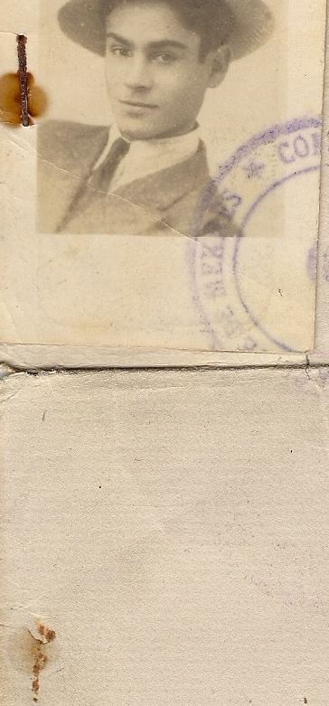
מרדכי בן הרוש, כבן 22 — התצלום המהודק לתעודת הקהילה, מכנאס, מרץ 1950 (באדיבות המשפחה)מרדכי במדי חאקי ברחוב עירוני — התצלום שעל גבו ההקדשה החתומה "בן הרוש מרדכי", 29.8.1949תעודת ועד הקהילה היהודית במכנאס, 7.3.1950 — בן יונאס בנארוש ויאקות חיון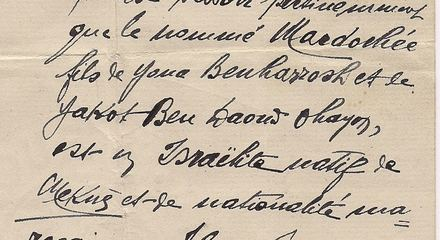
תרגום כתב העדות, 1950 — "מרדכי בן יונה בנהרוש ויאקות בת דאוד אוחיון", יליד מכנאס, רווק עד שעזב לארץ ישראל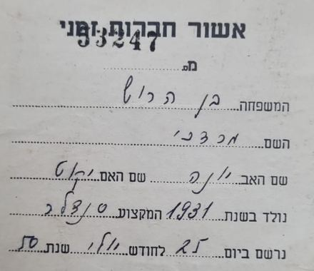
אישור חברות בהסתדרות, לשכת המס חיפה — מחנה עולים, 25.7.1950: בן יונה ויקוט, נולד 1931, סנדלר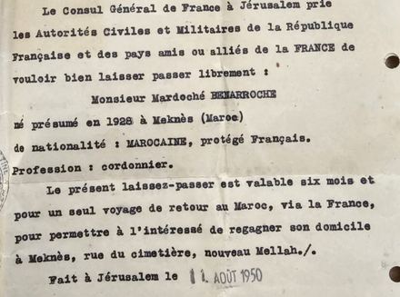
לסה-פסה של הקונסוליה הצרפתית בירושלים, 11.8.1950 — נולד כמשוער 1928 במכנאס, סנדלר; לנסיעת חזרה למרוקו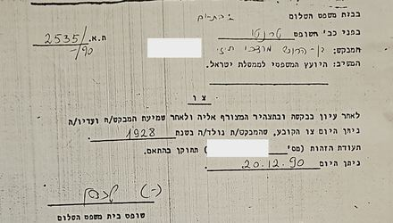
צו בית משפט השלום בת ים–חולון, 20.12.1990 — המבקש נולד בשנת 1928 (מספר הזהות מושחר)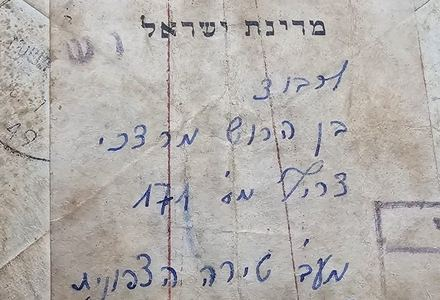
מעטפה רשומה, 1.8.1956 — בן הרוש מרדכי, צריף 171, מעברת טירת הכרמל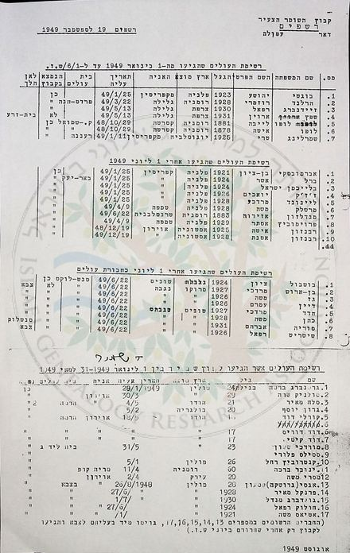
רשימות עולי קיבוץ רשפים, 19.9.1949 — בן-ארוש מרדכי, 1927, מרוקו, הגיע 22.6.49, יצא לצבא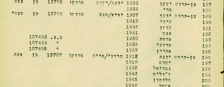
ההורים יונה ויקוט והאח יעקב — רשימת העולים של "ארצה", 11.6.1956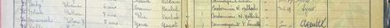
אסתר בנארוש, בת יונה ויקוט — פנקס אליאנס מכנאס 1953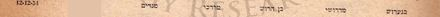
ילקוט הפרסומים 407 — בנערוש מרדושי ← בן הרוש מרדכי, מגדים 1954ילקוט הפרסומים 1144 — בן הראש מרדושה ← בן הראש מרדכי, ירושלים 1963, מס' זהות 6419140 — מועמד שני, ככל הנראה נשלל לפי מספר זהותאותה שורה בסריקת הגיליון מאתר olaw.org.il — עמודת מספר הזהות גלויה: ז/203321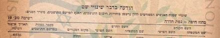
כותרת הרשימה — הודעה בדבר שינויי שם, רשימה 10, מחוז חיפה — נפת חדרה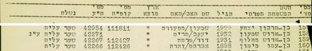
רשימת אוקטובר 1949, שורה 159 — בן-ארוס מחלוף, הורים דוד/פרחה: נשלל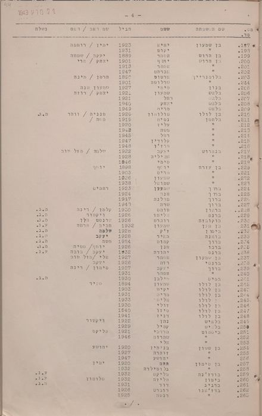
רשימת העולים מ-21.3.1949 — משפחת בן הרוש שנשללהאינדקס האנשים
בני המשפחה המרכזיים בדוח, עם קישור אל הפרק שבו כל אחד נדון; העץ מציג את כולם. שדה החיפוש שבראש העמוד מחפש גם בכתיבים החלופיים של השמות.
אינדקס המקורות
רשימת מקורות
לכל ערך: מהות המקור ומעמדו, ההפניה החיצונית למסמך המקורי, העותק המקומי השמור בתיקיית המחקר, ומה בדיוק הוא מוכיח. "עותק מקומי" פירושו עותק של המסמך עצמו. כל המקורות נצפו בספטמבר 2026.
מקורות ראשוניים
1. ילקוט הפרסומים 407, ח' בניסן תשט"ו (31.3.1955), עמ' 647 — הודעה בדבר שינויי שם, רשימה 10, מחוז חיפה — נפת חדרה (המועמד לרשומת שינוי השם)
- מהות: הרשומות הרשמיות של מדינת ישראל; העמוד סרוק בספריית המשפטים ע"ש דוד י. לייט, אוניברסיטת תל אביב, ואונדקס ב-IGRA (שינויי שמות לאחר 1948, כרך 13, גיליון 407, רשימה 10).
- מקור חיצוני: IGRA-1948-68-nc-22163 · סריקת העמוד בשרת IGRA (עמודת מספרי הזהות מושחרת) · הגיליון המלא (PDF, olaw.org.il; עמ' 647 = עמ' 9 בקובץ) (העמודה גלויה)
- עותק מקומי: העמוד המלא — סריקת IGRA · העמוד המלא — סריקת הגיליון (olaw.org.il) · חיתוך השורה עם עמודת מספר הזהות — ז/203321 · חיתוך השורה · כותרת הרשימה · תחתית העמוד
- מה הוא מוכיח: "בנערוש מרדושי" ממגדים, מס' זהות ז/203321 (פורמט ישן; האות ז/ג — ככל הנראה), קיבל את השם "בן הרוש מרדכי" ב-12.12.1954 — מאומת. שזה מרדכי בעלה של מרים — ככל הנראה: הכינוי אושר במשפחה אך נפוץ (המועמד השני, מקור 13, נשלל לפי מספר זהות), המגורים במגדים לא אושרו; ההכרעה — תמצית רישום עם שמות קודמים (פרק 7, פעולה 1).
2. ארכיון המדינה, רשימת עולים אפריל 1949, גל-15493/6, מסמך 192, שורה 54 — "מרדכי בנארוש" (נשלל)
- מקור חיצוני: IGRA-1949-ImmigApr-19673
- מה הוא מוכיח: מרדכי בנארוש יליד 1910 — אדם אחר.
- הערה: אין עותק מקומי — רשומת אינדקס; הסריקה ב-IGRA לא נשמרה כי הרשומה נשללה.
3. ארכיון יד יערי, רשימות שמיות של עולים — קיבוץ רשפים, מסמך מ-19.9.1949, עמ' 12, רשימה שלישית שורה 2 — "בן-ארוש מרדכי" (מועמד לרשומת העלייה — ככל הנראה)
- מהות: רשימות העולים שנקלטו בקיבוצי השומר הצעיר אחרי קום המדינה (ארכיון יד יערי, מס' מערכת 3.3.13), סרוקות ב-IGRA. בעמוד — קיבוץ רשפים, דואר עפולה, 19.9.1949: ארבע רשימות; השלישית — "העולים שהגיעו אחרי 1 ליוני כחבורת עולים", שמונה צעירים מטוניס וממרוקו שהגיעו 22.6.1949.
- מקור חיצוני: IGRA-Immigrants-Communal-Settlements-282 · סריקת העמוד בשרת IGRA
- עותק מקומי: העמוד המלא (הורד 12.09.2026)
- מה הוא מוכיח: «בן-ארוש · מרדכי · 1927 · מרוקו · 49/6/22 · סנט-לוקס(?) · הנמצא בקיבוץ: לא · לאן הלך: צבא» — מאומת. שזה מרדכי בעלה של מרים — ככל הנראה (מהדורה 15): 1927 = "בן 22" במסמכי מכנאס 1949–1950 (מקורות 15–16), היציאה לצבא = עדות המשפחה; אין שמות הורים. במהדורות 1–14 נשלל בגלל הפער מ-1931.
4. מסירות משפחתיות (ספטמבר 2026) (מקור משפחתי — ללא מסמך)
- מהות: שנת הלידה 1931 (כנראה גם במשרד הפנים), ההורים יונה ויקוט — פנינה בישראל (אושר), עיר הלידה מכנאס, העלייה 1947/48 לבדו בעליית הנוער וגיוס מיידי, הכינוי "מרדושי", האחים (כולם מוכרים; ובנוסף ניסים/מקסים ומרים שלא עלו, ומיכאל מכלוף הצעיר שעלה בנפרד), יונה יליד 1898 "לפי הידוע", ההורים לצפת → תל אביב–יפו, קבורים בהר המנוחות, נישואין ראשונים לחנה (אנה?) ובן, יוני, נישואין למרים בתל אביב בספטמבר 1960, הפטירה 2010 והקבורה בירקון — נמסרו בעל-פה (11–12.09.2026). המשפחה אינה בטוחה ששנת הלידה זהה לרשום בתעודת הזהות.
- נמסר 12.09.2026 (ערב): מספר הזהות של מרדכי, מתעודותיו (אינו נרשם באף קובץ של המאגר ואינו מתפרסם; התעודה לא נראתה במחקר) — ושונה ממספר הזהות ברישום ירושלים 1963 (מקור 13).
- מה הוא מוכיח: נקודת המוצא (פרק 2) — זיכרון, לא רשומה — למעט מספר הזהות, שנקרא מתעודה.
5. ארכיון המדינה — רשימות עולים 1947–1949 (S‑104‑607…614, גל‑15492/1–5, גל‑15493/1–8, גל‑15494/1–8), אוסף Google Pinpoint
- מהות: 29 קבצים; נקראו דרך שכבת ה-OCR של Pinpoint. כולל את "בן-ארוס מחלוף" (אוקטובר 1949, גל-15494/5, עמ' 3 של הרשימה — עמ' 21 בקובץ ה-PDF במניין מ-1) ואת משפחת הרוש (יוני 1949, גל-15493/8, עמ' 150–151) שנשללו.
- מקור חיצוני: האוסף ב-Pinpoint — חיפוש "בן הרוש מרדכי"
- מה הוא מוכיח: ממצא שלילי חלקי — סעיף 5.1, N-1.
- עותק מקומי: רשימת אוקטובר 1949, עמ' 3 — שורה 159 "בן-ארוס מחלוף" · חיתוך: כותרות העמודות ושורות 157–160 (נקרא מהסריקה: יליד 1931, הורים דוד/פרחה, ארץ מוצא — סימן דיטו, מס' קופ"ח 112427, ת.ע. 42267).
- הערה: לשאר הרשומות שנשללו על פי OCR בלבד אין עותק מקומי.
6. ארכיון המדינה, רשימת עולים מרץ 1949 חלק ב, גל-15493/3, עמ' 45 — רשימה ממרץ 1949 (החותמת בעמוד: 21.3.1949) (נשלל)
- מקור חיצוני: המסמך ב-Pinpoint
- עותק מקומי: העמוד (סריקה ברוחב 800) — עמ' 4 של הרשימה; בפינת העמוד כתוב "44"; עמ' 45 בקובץ ה-PDF במניין מ-1 (page_number=44 בכתובת Pinpoint)
- מה הוא מוכיח: משפחת בן הרוש (שורות 199–202) ללא מרדכי; "יקוט" בשורה 198 שייכת למשפחת בן שמעון.
מקורות עזר
7. אתר מושב מגדים (מקור עזר מקוון — משני)
- מקור חיצוני: homee.co.il — מגדים
- מה הוא מוכיח: "מגדים הוקם בשנת 1949 על-ידי קבוצת עולים מצפון אפריקה"; המושב סמוך לעתלית. מקור משני; אין לו עותק מקומי.
8. IGRA — חיפוש "Harush" + "Mordekhai" ו-"בן הרוש" + "יונה" (מקור עזר מקוון)
- מקור חיצוני: מסד הנתונים של IGRA — מסלול החיפוש: כל המאגרים, שם משפחה Harush (התאמה פונטית) + שם פרטי Mordekhai; ובעברית "בן הרוש" + "יונה"; 11.09.2026. וכן (12.09.2026, N-6): שם פרטי "מרדושי" ללא התאמה פונטית — 25 רשומות (19 במאגר שינויי השמות); "מרדושה" — 29 (17 בשינויי שמות), ובהן «מרדכי (מרדושה) בן הראש», ירושלים, אישור 9/1963, פורסם 30.12.1964 (מקור 13); שם משפחה "בנערוש" — 1; Harush (פונטי) בשינויי שמות — 26; Benharosh + Mordechai (פונטי) — 7
- מה הוא מוכיח: 13 תוצאות (1839–1960) לחיפוש הפונטי, שמונה מהן בשם מרדכי הרוש/חרוש/ארוש (נוטרים 1936 ו-1947, שבויים 1948, שאלון עולה 1950 יליד קהיר, צפת 1839, אליאנס 1960 ועוד) — אף אחת עם 1931 או יונה/יקוט; אין "יונה בן הרוש". ממצא שלילי.
9. IGRA — "תלמידים 1917–1964 אליאנס מרוקו", אשכולות Benharoch/Benarroch ו-Haroch/Harroch, 1937–1946 (מקור עזר מקוון)
- מקור חיצוני: מסד הנתונים של IGRA — מסלול החיפוש: מאגר "Students 1917-1964 Alliance Morocco", שם משפחה Benharoch / Haroch (פונטי), שנים 1937–1946 אחת-אחת, ושם פרטי Mardochée; 11.09.2026
- מה הוא מוכיח: ממצא שלילי חלקי — סעיף 5.2, N-2. הרשומה החיובית שעלתה מאותו מאגר (אסתר, 1953) — מקור 10.
רשומות משפחתו
10. פנקס בית הספר לבנות של אליאנס במכנאס, 1953 — מספר סידורי 3076, "Benarroch Esther", הורים Yona/Yacot (אחותו של מרדכי)
- מהות: פנקס רישום תלמידות, כתב יד בצרפתית; CAHJP, סימול AIU‑MA‑240.2; IGRA מסמך 2376, שורה 26. אותו עמוד פנקס שבו רשומה רחל דהן, אחותה של מרים.
- מקור חיצוני: IGRA-AIU-Morocco-54149 · הסריקה בשרת IGRA
- עותק מקומי: עמוד הפנקס המלא · חיתוך השורה
- מה הוא מוכיח: אסתר בנארוש, בת 5 ב-1953, הורים Yona ו-Yacot, מקצוע ההורים (או האפוטרופוסים): סוחר, העיר החדשה של מכנאס; עזבה ב-1955. מאומת: שם, גיל, הורים. הזיהוי כאחותו של מרדכי — כמעט ודאי (סעיף 5.2).
11. ארכיון המדינה — רשימת עולים שכותרתה «"ארצה" מיום 11.6.56», עמוד 4, שורות 187–201 (גל-15499/1, "רשימת עולים מאי–יוני 1956") (ההורים והאח)
- מהות: רשימת עולים של הסוכנות היהודית, מכונת כתיבה עברית; כותרתה «"ארצה" מיום 11.6.56» — ככל הנראה שם האונייה; עמודות: המשפחה והשם · הגיל · אב/אם · ארץ מוצא · מס' ת.ע. · בוטח לקו"ח · בנמל נשלח ל-. נגיש דרך אוסף ארכיון המדינה ב-Google Pinpoint (עמוד 144 בקובץ ה-PDF, במניין מ-1); הסריקה השמורה — הנגזרת ברוחב 800px שהשרת מגיש.
- מקור חיצוני: הקובץ ב-Pinpoint · סריקת העמוד (800px)
- עותק מקומי: העמוד המלא · שורות בן-הרוש · כותרת העמוד
- מה הוא מוכיח: בן-הרוש יעקב (1933, הורים יונה/יקוט, ת.ע. 13785) עם מרי (1936); בן-הרוש יונה (1912 או 1918 — הספרה האחרונה מוכה כפול, ככל הנראה 1912; הורים מרדכי/מרים, ת.ע. 13787) עם יקוט (1918), גבריאל (1942), ז'וליט (1943), סלומון (1945), אסתר (1948) — מרוקו, נשלחו לצפת. מאומת: השמות, השנים (למעט ספרת יונה) ומספרי ת.ע.; מספרי ב.נ. בעמוד אינם מיושרים לשורות — טעון אימות. הזיהוי כמשפחתו של מרדכי — כמעט ודאי (סעיף 5.3), באישור המשפחה. באותו עמוד יוסף בן-הרוש (1907, יחיא/חנה) ובני ביתו, ובהם מרדכי יליד 1936 — משפחה אחרת, נשלל.
12. IGRA — מסד המעפילים עתלית (Immigration Atlit Database, 1932–49), רשומה "מרדכי בן הרוש", מסמך 39404 (טרם נפתח)
- מהות: אינדקס של ארכיון מחנה המעפילים עתלית; הרשומה מופיעה בשם בלבד, ללא שנה, גיל או מוצא. פרטים — בפנייה לארכיון עתלית.
- מקור חיצוני: מסד הנתונים של IGRA — מסלול: שם משפחה Ben Harosh / Benharoch (פונטי) + Mordechai, מאגר Immigration Atlit Database; IGRA מס' 6655, מסמך 39404 (11.09.2026)
- מה הוא מוכיח: קיומה של רשומה בשם זה במחנה עתלית — מועמד לרשומת העלייה של מרדכי כנער שעלה לבדו (סעיף 5.4, N-5). אינדקס — לא מסמך; אין עותק מקומי.
13. ילקוט הפרסומים 1144, כ"ה בטבת תשכ"ה (30.12.1964), עמ' 901 — הודעות בדבר שינוי-שם, מחוז ירושלים, נפת ירושלים, רשימה 9/63, שורה 7 (מועמד שני — נשלל לפי מספר זהות)
- מהות: הרשומות הרשמיות של מדינת ישראל; הגיליון סרוק (23 עמודים, PDF) באתר olaw.org.il ומאונדקס ב-IGRA (שינויי שמות לאחר 1948, ללא תמונה במאגר). נמצא 12.09.2026 בהרחבת בדיקת N-6 לכתיב "מרדושה".
- מקור חיצוני: IGRA-1948-68-nc-NOIMAGES-18069 · הגיליון המלא (PDF, olaw.org.il)
- עותק מקומי: עמ' 901 — העמוד המלא · חיתוך מורכב: כותרת הרשימה, כותרות העמודות ושורה 7 · ראש העמוד — "ילקוט הפרסומים 1144", כ"ה בטבת תשכ"ה, 30 בדצמבר 1964, עמוד 901
- מה הוא מוכיח: "בן הראש מרדושה", מס' זהות 6419140, קיבל את השם "בן הראש מרדכי" בנפת ירושלים בין 1.9.63 ל-30.9.63 — מאומת. שזה מרדכי בעלה של מרים — ככל הנראה נשלל (12.09.2026): מספר הזהות של מרדכי, שמסרה המשפחה מתעודותיו (לא נראה במחקר, אינו מתפרסם), שונה (סעיף 3.4). מוכיח שהצירוף כינוי + שם משפחה אינו ייחודי.
14. רשות האוכלוסין וההגירה — נוהל 2.17.0001, "הנפקת תמצית רישום רגילה/מורחבת" (עדכון 18.2.2025) (מקור עזר — נוהל)
- מקור חיצוני: הנוהל (PDF, gov.il) · טופס מר/2 — בקשה למתן תיעוד ממרשם האוכלוסין — נצפו 12.09.2026.
- מה הוא מוכיח: סעיף 3.6 — "קרבה ראשונה": בן/בת זוג, ילדים בגירים, הורים או אחים; סעיף 3.8 — תמצית על נפטר מקרבה ראשונה מוגשת בלשכה, תמצית רגילה; סעיף 4.7 — "ניתן להוסיף פרטי כניסה לארץ, ישוב לידה ושמות קודמים"; תמצית מורחבת על נפטר — רק לצורכי ירושה או בהחלטה שיפוטית (3.9–3.10). השירות ללא תשלום (כל-זכות). בסיס לפעולה 1 בפרק 7.
מסמכי מכנאס שבידי המשפחה
15. תעודת ועד הקהילה היהודית במכנאס, 7.3.1950 — "Mardoch BENARROCHE, fils de Yonas BENARROCHE et de Yacoth HAYOUN" (מרדכי עצמו — מאומת)
- מהות: טופס בולים (Maroc 20 F, מס' CV 94906), מכונת כתיבה בצרפתית, תצלום מהודק; חתימת סגן נשיא הוועד בשם הנשיא, חותמות "Comité de la Communauté Israélite de Meknès"; אימות חתימה של שירותי העירייה, מכנאס, 9.3.1950. המקור בידי המשפחה; הסריקה נמסרה 12.09.2026.
- עותק מקומי: התעודה המלאה · גוף התעודה · התצלום
- מה הוא מוכיח: מרדוך בנארוש, בן יונאס בנארוש ויאקות חיון, כבן 22 במרץ 1950, יליד מכנאס, אזרח מרוקו — מאומת. שם נעוריה של האם (Hayoun = אוחיון) ושנת לידה 1927/28 (גיל משוער; כתב העדות: 1926/27). סעיף 5.5.
16. תרגום צרפתי מאושר של כתב עדות עברי — מכנאס, א' בחשוון תש"י (24.10.1949); התרגום 10.8.1950, מס' 2080 (מרדכי עצמו — מאומת)
- מהות: שני דפי בולים (Maroc 20 F ×2, מס' CX 62342), כתב יד בצרפתית, תצלום מהודק בעמוד 1: «Traduction d'un acte hébraïque»; החתומים על המקור — שמואל חליווה ודוד משאש; המתרגם — מזכיר בית הדין הרבני ומתרגם מושבע, מכנאס; אימות חתימה בעירייה 11.8.1950 ואימות מזכירות מחוז מכנאס 2[1?].8.1950 (ספרה מוסתרת בחותמת). המקור בידי המשפחה; הסריקה נמסרה 12.09.2026.
- עותק מקומי: עמוד 1 · עמוד 2 · חיתוך: שמות ההורים · חיתוך: הגיל והתאריך
- מה הוא מוכיח: עדות שני עדים (מסעוד דיין בן דוד ז"ל; סלומון בן מנחם בהלול) ש"מרדכי בן יונה בנהרוש ויאקות בת דאוד אוחיון", יליד מכנאס, אזרח מרוקו, לא נשא אישה עד שעזב את מכנאס להתיישב בארץ ישראל ("Palestine"); והצהרת יונה שבנו בן 22 (24.10.1949) — מאומת כמסמך. שם נעוריה של האם ושם אביה — דוד אוחיון. סעיף 5.5.
17. שתי הקדשות על גבי תצלומים — 29.8.1949 (חתומה "בן הרוש מרדכי", יהודית-ערבית) ו-1.7.1951 (עברית) (מרדכי עצמו — 1949 מאומת; 1951 ככל הנראה)
- מהות: כתב רהוט עברי-מגרבי בעיפרון, שני פריטים; נמסרו 12.09.2026, צילום חד של הראשון — 13.09.2026. פריט א (חזית נמסרה 13.09.2026: מרדכי בחולצת חאקי צבאית ומכנסי חאקי, פוסע ברחוב עירוני — לפי המשפחה במדי צה"ל, נשלח להוריו במרוקו): שש–שבע שורות ביהודית-ערבית (טרם תורגמו; שורה 3 אולי «מן ענד מרדכי»), «Le 29/8(?)/49», חתימה «בן הרוש מרדכי». פריט ב: קריאת המשפחה (12.09.2026): «זאת תמונה אני והחברה של החבר שלי. אני נותן לכם אותה בתור מזכרת שלי ושלו, וגם הוא מהעיר שלנו (חתימה) 1.7.51» — החתימה שרבוט בלולאה, אינה ניתנת להשוואה עם השם הקריא שבפריט א; אותו כתב יד בעיפרון.
- עותק מקומי: פריט א — חזית: מרדכי במדים · חיתוך: הפנים · פריט א — הגב, 29.8.1949, חתום · פריט ב — 1.7.1951 · פריט א, צילום קודם
- מה הוא מוכיח: חתימת מרדכי בן הרוש ב-29.8.1949 — חודשיים אחרי הגעת חבורת רשפים; ובחזית — מרדכי בלבוש צבאי (ככל הנראה מדי צה"ל; אין דרגות/סמלים נראים), בישראל, לכל המאוחר באותו תאריך — תמיכה ברשומת רשפים ("יצא לצבא"); כתב ידו וחתימתו (מקור 20 אינו חתום — אין השוואה); ההקדשה מ-1951 — ככל הנראה שלו (כתב יד ונמענים; החתימות אינן ניתנות להשוואה). סעיף 5.5, ג; פרק 7, פעולה 7.
18. ילקוט הפרסומים 1920, י"ט באייר תשל"ג (21.5.1973), עמ' 1710 — מחוז הצפון, נפת צפת, רשימה 3/72 — "הרוש מכלוף → הרוש מיכאל" (מועמד לאח מיכאל מכלוף — טעון אימות)
- מהות: הרשומות הרשמיות; הגיליון סרוק ב-olaw.org.il (עמ' 1710 = עמ' 6 בקובץ) ומאונדקס ב-IGRA (ללא תמונה). רשימות 1972–73 אינן נושאות מספרי זהות. נמצא 12.09.2026 באותו עמוד שבו "אבוטבול מכלוף → מיכאל" (מחקר מרים, מקור 12).
- מקור חיצוני: IGRA-1969-79-nc-NOIMAGES-6849 · הגיליון המלא (PDF, olaw.org.il) · IGRA "הרוש"+"מכלוף": חמש רשומות שינוי שם מכלוף→מיכאל (צפת 1973, חיפה 1968, תל אביב 1974 — "בן-ארי (בן-הרוש)", באר שבע 1972, חיפה 1962)
- עותק מקומי: עמ' 1710 — העמוד המלא · חיתוך מורכב: כותרת הרשימה והשורה
- מה הוא מוכיח: מכלוף הרוש מנפת צפת קיבל את השם מיכאל, אישור מרץ 1972 — מאומת. שזה אחיו של מרדכי — טעון אימות (עברות נפוץ; אין גיל; צפת תומכת — ההורים הגיעו לצפת ב-1956). פרק 6, פרק 7 פעולה 2ג.
19. מעטפה רשומה, "בן דור", 1.8.1956 — הפועל המזרחי, תל אביב → "בן הרוש מרדכי, צריף מס' 171, מעב' טירה הכרמל" (מרדכי עצמו — מאומת)
- מהות: מעטפה מודפסת «[הפועל] המזרחי בארץ־ישראל · תל־אביב · רח' אחד העם 108, ת.ד. 431, טלפון 24174/5/6»; נמען בכתב יד; תווית דואר רשום «בן דור · Ben Dor · 2684» וחותמת תאריך «בן דור 1.8.56»; חותמת שנייה חלקית. המקור בידי המשפחה; הצילום נמסר 13.09.2026.
- עותק מקומי: המעטפה · הנמען · תווית הדואר הרשום
- מה הוא מוכיח: באוגוסט 1956 מרדכי גר בצריף 171 במעברת טירת הכרמל (חוף הכרמל) — מאומת; ההתכתבות עם הפועל המזרחי. "בן דור" — טעון בירור (אולי משרד הדואר של טירת הכרמל בשנות החמישים — אז המכתב נשלח מקומית). סעיף 5.5, ד.
20. מכתב בכתב ידו של מרדכי בן הרוש אל "מר ויינר, מנהל מעברת טירה צפונית", לא מתוארך (אחרי אוגוסט 1956) (מרדכי עצמו — כמעט ודאי)
- מהות: דף אחד, דיו כחולה, עברית; בראשו «בתשובה נא להזכיר: בן הרוש מרדכי, רח' בית ה[—] 28 ת.»; נמען «לכ' מר ויינר מנהל מעברת טירה צפונית»; תוכן: פנייה בעניין דיור "בתור עולה חדש", ארבעה חודשים אחרי פגישה עם מר ויינר; "אני גר אצל הורי"; מסיים «אני עלול לדרוש בחזרה למעברה שהיינו — טירה צפונית». ללא חתימה (טיוטה/העתק?). שם הרחוב — לא נקרא. המקור בידי המשפחה; הצילום נמסר 13.09.2026.
- עותק מקומי: המכתב · ראש המכתב
- מה הוא מוכיח: כתב ידו וכתובתו; שהיה במעברת טירה (טירת הכרמל) ועזב אותה — במילותיו; מגורים אצל ההורים (אחרי אוגוסט 1956); התמודדות עם דיור כעולה. סעיף 5.5, ד.
21. בית משפט השלום בת ים–חולון, ת.א. 2535/90 — צו מיום 20.12.1990: המבקש בן-הרוש מרדכי נולד בשנת 1928 (מרדכי עצמו — מאומת)
- מהות: צו שיפוטי מודפס וממולא ביד; המשיב — היועץ המשפטי לממשלה; "לאחר עיון בבקשה ובתצהיר… ולאחר שמיעת המבקש ועדיו"; חותמות בית המשפט ו"העתקה נכונה 20.12.1990". המקור בידי המשפחה; הצילום נמסר 13.09.2026. מספר הזהות שבמסמך מושחר בעותק המקומי (9.6).
- עותק מקומי: הצו (מושחר) · חיתוך: הצדדים וגוף הצו
- מה הוא מוכיח: הצו — מאומת; שנת הלידה 1928 — כמעט ודאי (הכרעה שיפוטית על סמך תצהיר ועדים, ללא מסמך לידה); תעודת הזהות תוקנה (לפי המשפחה נשאה 1931; הצו אינו מציין את הרישום הקודם). סעיף 5.5, ה.
22. הקונסוליה הכללית של צרפת בירושלים — Laissez-passer מס' 340, 11.8.1950, "Mardoché BENARROCHE, né présumé en 1928 à Meknès" (מרדכי עצמו — מאומת)
- מהות: טופס מודפס של הקונסוליה («Consulat Général de France à Jérusalem · République Française»), מכונת כתיבה, תצלום, בולי Affaires étrangères 100+500 F, חותמות «Consulat Général de France en Palestine — Jérusalem», חתימת סגן הקונסול. המקור בידי המשפחה; הצילום נמסר 13.09.2026.
- עותק מקומי: המסמך המלא · גוף המסמך · התצלום
- מה הוא מוכיח: ב-11.8.1950 מרדכי בישראל (המסמך הונפק בירושלים); "נולד כמשוער 1928 במכנאס"; אזרח מרוקו, בן-חסות צרפתי; סנדלר; ביתו — מכנאס, רחוב בית הקברות, המלאח החדש; מסמך לנסיעת חזרה חד-פעמית למרוקו דרך צרפת — מאומת. סעיף 5.5, ו.
23. מכתב ביהודית-ערבית, שני עמודים, לא מתוארך — על גב נייר מכתבים של עורך דין בתל אביב (טרם תורגם; הכותב — טעון אימות)
- מהות: דיו כחולה, כתב רהוט מגרבי, על גב נייר מכתבים מודפס; הכיתוב השקוף נקרא בהיפוך: «JACOB G[…] M.A. · ADVOCATE · 33 MONTEFIORE STREET · P.O.B. 2296 · TEL-AVIV» / «יעקב ג[…] עורך-דין, רח' מונטיפיורי 33, ת.ד. 2296, תל-אביב» — הנייר ישראלי, והמכתב נכתב ככל הנראה בישראל; נמסר 13.09.2026. לא תורגם — דורש קורא של יהודית-ערבית מרוקאית בכתב סופרים.
- עותק מקומי: המכתב
- מה הוא מוכיח: נכתב על נייר תל אביבי — ככל הנראה בישראל; התוכן והכותב — טרם (פרק 7, פעולה 7).
24. ההסתדרות הכללית — לשכת המס בחיפה, "מחנה עולים": אישור חברות זמני מס' 33247, 25.7.1950 — בן הרוש מרדכי, בן יונה ויקוט, נולד 1931, סנדלר (מרדכי עצמו — מאומת)
- מהות: טופס מודפס ממולא ביד בפנקס חברות (לפי המשפחה — קופת חולים של ההסתדרות); חותמת «לשכת המס חיפה» וחתימת בא-כוח הלשכה. "יולי" — קריאה סבירה של החודש בכתב היד (אפשר גם יוני). הצילום נמסר 13.09.2026; שאר הפנקס לא צולם.
- עותק מקומי: העמוד · חיתוך: השדות
- מה הוא מוכיח: ביולי 1950 מרדכי רשום בלשכת המס של מחנה עולים בחיפה — שם, הורים (יונה/יקוט), מקצוע סנדלר, ושנת לידה 1931 — המסמך הישראלי המוקדם ביותר, חודש לפני "présumé 1928" של הקונסוליה (מקור 22). סעיף 5.5, ח.
25. מעטפה רשומה, חיפה 28317, 1956 — אל "מר בן הרוש, מעברת טירה הצפונית, צריף 171 מחנה ד'" (מרדכי עצמו — הכתובת מאומת; השולח טעון אימות)
- מהות: מעטפה רשמית «מדינת ישראל»; תווית דואר רשום חיפה 28317; חותמת דואר «חיפה 4 · 1?-?-56»; בגב חותמת שולח דהויה — נקראת כ«משרד ה[דתות?] · [בית] הדין [הרבני] האזורי חיפה · 17 […] 1956 · ת.ד. 716» — קריאה לא ודאית. הצילום נמסר 13.09.2026.
- עותק מקומי: המעטפה (חזית וגב)
- מה הוא מוכיח: כתובתו ב-1956 — מעברת טירה הצפונית, מחנה ד', צריף 171 — ממקור שני, בלתי תלוי במעטפת "בן דור" (מקור 19), ובהתאם לעדות המשפחה. השולח — אם בית הדין הרבני חיפה — נוגע כנראה לנישואיו הראשונים (M-T9). סעיף 5.5, ט.
יומן המהדורות
מהדורה 1 · 11.09.2026
- דף ראשון. נתוני המשפחה: יליד 1931, בן יונה ויקוט, עלה 1947/48, נפטר 2010. נסרקו IGRA (שינויי שמות, עולים, קבורות, אליאנס מרוקו), רשימות העולים 1947–1949 (חלקית) ו-JPress.
- מועמד פתוח: "בנערוש מרדושי → בן הרוש מרדכי", מגדים, 12.12.1954 (ילקוט הפרסומים 407 עמ' 647). נשללו: בנארוש 1910, בן ארוש מכלוף 1931, משפחת בן הרוש 24.3.1949, משפחת הרוש יוני 1949; רשפים 1927 ככל הנראה נשלל.
מהדורה 2 · 11.09.2026
- הסבה לשלד המשותף של הארכיון, המנוע genealogy_site: report.md, sources-index.md, tree.html, פרק שיטה ומגבלות. נוספה ראיה 4 — עמוד רשימת העולים מ-24.3.1949 עם משפחת בן הרוש שנשללה. הדף: מרדכי-בן-הרוש.html.
מהדורה 3 · 11.09.2026
- מהמשפחה: מרדכי נולד במכנאס. עודכנו פרק 2, סעיף 5.2, פרק 7 (פעולה 2), העץ, M-T3. חיפוש פנקסי הבנים של אליאנס מכנאס נדחה — כלי הארכיון לא היו זמינים.
מהדורה 4 · 11.09.2026
- נמצאה משפחתו של מרדכי בשני מסמכים. (א) פנקס אליאנס מכנאס 1953, מס' 3076: אסתר בנארוש, בת 5, הורים Yona/Yacot, אב סוחר בעיר החדשה (S10). (ב) ארכיון המדינה, רשימת "ארצה" 11.6.1956 עמ' 4 (גל-15499/1): יעקב בן-הרוש 1933 (יונה/יקוט) עם מרי 1936; יונה בן-הרוש 1918 (מרדכי/מרים) עם יקוט 1918, גבריאל 1942, ז'ולייט 1943, סלומון 1945, אסתר 1948 — לצפת (S11). מסקנות: חמישה אחים ואחיות; סבו של מרדכי — מרדכי; ההורים נשארו במכנאס עד 1956, ולכן מרדכי עלה לבדו כנער. פרק 5 נכתב מחדש (5.2–5.4), ראיות 5–7, פרק 6 והעץ (שלושה דורות), פרק 7, N-2/N-3, M-T3/M-T4 נסגרו, M-T5 (1918/1931) ו-M-T6 (עלייה לבדו; עתלית 39404) נפתחו.
מהדורה 5 · 11.09.2026
- מהמשפחה: האם — פנינה. במסמכים — יקוט/Yacot; פורש כעברוּת של אותו שם (יקות = אבן חן → פנינה), ככל הנראה. פרק 2, סעיף 5.3, פרק 6, העץ, S4.
מהדורה 6 · 11.09.2026
- סבב ביקורת חיצונית ראשון (27 ממצאים: 5 קריטיים, 12 בינוניים, 10 קלים). תוקנו: חיתוך כותרת הרשימה (ראיה 2) הוחלף בחיתוך הנכון (1); שנת יונה — 1912 או 1918, הספרה מוכה כפול, ככל הנראה 1912 (2); "שש רשומות" → 13 (3); ב.נ. 107492 הוסר — המספרים אינם מיושרים לשורות (4); "נקרא על שם סבו" ו"עלה לבדו" מנוסחים כהיקש מדורג (5); סעיף 5.4 ממוקר — מקור 12 (עתלית 39404), N-5, והבחנה בין מועמד לשינוי השם למועמד לרשומת העלייה (6); מרדכי 1936 בבלוק יוסף — נשלל במפורש (7); 16 קבצים = 20 חלקי-קובץ (8); NEGATIVES סונכרן (9); M-T3/M-T4 (10); כרטיסי הרג'יסטרי (11); ידע כללי סומן ככזה (12); "מכנאס עד 1956" נוסח כהיקש (13); חותמת 21.3.1949 (14); סולם בן חמש דרגות (15); "מהדורה 4" הוסר (16); גיל/שנת לידה של אסתר פוצלו (17); ומינוריים 18–27.
- מהמשפחה: מרדכי עלה לבדו לפני משפחתו, בן 16–17 (ההערה "במטוס" נמחקה במהדורה 14 — המשפחה אינה בטוחה); הוסיף לגילו שנה-שנתיים והתגייס כבן 18; האחים גבי, יעקב ואסתר — "כולם שם", כנראה גם השאר. פרק 2, סעיף 5.3, פרק 6, פרק 7 (פעולות 2, 3, 5, 5א), העץ, M-T5, M-T6, M-T7.
- UX (סבב ביקורת ראשון על העמוד הבנוי — במנוע המשותף; ראו יומן מרים, המהדורה השלוש-עשרה).
מהדורה 7 · 12.09.2026
- העץ נבנה מחדש (common/treegen.py, tree_data.py): אדם אחד לכל תיבה; סדר מימין לשמאל — הבכור מימין; מרדכי ומרים (הסבים) בתיבות נפרדות; מרי, אשתו של יעקב, נוספה; בנות הזוג מתחת בקו מנוקד.
מהדורה 8 · 12.09.2026
- תשובות המשפחה לעשר שאלות: כינויו "מרדושי" (אושר — מועמד מגדים עלה ל"ככל הנראה"); עלה לבדו בעליית הנוער והתגייס מיד; לא הבכור — ניסים (מקסים) ומרים לפניו, לא עלו; יונה יליד 1898 לפי המשפחה; יקוט = פנינה (אושר, כמעט ודאי); ההורים צפת → תל אביב–יפו, קבורים בהר המנוחות; נישואין ראשונים לחנה (אנה?) ובן יוני; נישואין למרים בתל אביב, ספטמבר 1960; שנת הלידה במשרד הפנים כנראה 1931. עודכנו הלִיד, פרקים 1–3, סעיף 5.3, פרק 6, פרק 7 (פעולות 1, 2, 2א, 2ב, 3, 5א), העץ (ניסים, מרים, חנה, יוני), S4, M-T1, M-T5, M-T6; נפתחו M-T8, M-T9.
מהדורה 9 · 12.09.2026
- מהמשפחה: אח צעיר נוסף — מיכאל מכלוף, עלה בנפרד במועד לא ידוע. פרק 2, פרק 4 (הערה לשורת "בן ארוש מכלוף 1931"), פרק 6, פרק 7 (2ג), העץ, S4, M-T10.
מהדורה 10 · 12.09.2026
- סבב ביקורת חיצונית שני (32 ממצאים: 4 קריטיים, 14 בינוניים, 14 קלים; ומ-27 ממצאי הסבב הראשון — 11 שתוקנו חלקית ואחד שלא תוקן). תוקנו: הסריקה של אוקטובר 1949 נוספה ל-git; שורה 159 נקראה מחדש — ארץ המוצא היא סימן דיטו (שרשרת ל"ירן", שורה 143) ומס' ת.ע. הוא 42267 (112427 — קופ"ח), עם חיתוך ראיה חדש (כותרות ושורות 157–160); הלִיד נפתח אחרת ומבטיח עותק שמור רק למסמכים שנקראו; מועמד מגדים — נבדקה שכיחות הכינוי (N-6: "מרדושי" ב-19 רשומות שינוי שם — נפוץ; הצירוף עם בן הרוש/בנערוש — יחיד), הנימוק הנסיבתי נמנה פעם אחת, נוסף "מה עומד נגד" (המשפחה אינה מכירה מגדים ושינוי שם; שאלת הכינוי נשאלה כשאלה מובילה — M-T1), הדירוג "ככל הנראה" נותר; §5.3 — "לא היה הבכור" ו"המשפחה מכירה את כולם" (במקום שני משפטים ממהדורה 4); הצהרת פרטיות בפרק 2 וב-9.6, ובנו של מרדכי ואשתו הראשונה — ללא שנת לידה; 9.6 על מקום הקבורה; מניין הקבצים ביחידה אחת — 20 מתוך 29 קבצים ארכיוניים (21 חלקי-קובץ), 9 לא נקראו; יקוט=פנינה ירד ל"ככל הנראה"; מרדכי 1936 נוסף לטבלת הנשללים — שבע; כותרת ה-SVG הנגישה — תשעת הילדים; מקרא "מסגרות מקווקוות — ללא מסמך ישיר" (בפועל נקלט רק במהדורה 11); "מקצוע ההורים (או האפוטרופוסים)" בשלושה מקומות וכותרות הפנקס בצרפתית; "המועמד היחיד לרשומת שינוי השם" מול עתלית; מיכאל — "מקומו בסדר לא ידוע" בתיבה; מקור 1 — "ככל הנראה"; מקור 6 — הערת מניין עמודים; מקור 11 — כותרת ללא "האונייה"; כיתוב הגלריה 21.3.1949; פעולה 4א; 9.5 — ארבעת החסמים; M-T6/M-T7; ז'וליט; ארבעה נתוני שלד; סולם הוודאות סונכרן בפורטל וב-TEMPLATE; הרג'יסטרי — עשרה כרטיסים, "מכנאס", ללא "בתחילתו".
מהדורה 11 · 12.09.2026
- סבב ביקורת חיצונית שלישי (20 ממצאים: 3 קריטיים, 8 בינוניים, 9 קלים). הממצא המרכזי: בדיקת שכיחות הכינוי (N-6) הורחבה לכתיב "מרדושה" — 17 רשומות שינוי שם נוספות (36 בסך הכול; הכינוי נפוץ), ובהן מועמד שני: «בן הראש מרדושה → בן הראש מרדכי», מחוז ירושלים, רשימה 9/63 (אישורים 1.9.63–30.9.63), ילקוט הפרסומים 1144 עמ' 901, מס' זהות 6419140 — הגיליון הורד (olaw.org.il), העמוד והחיתוך נשמרו (מקור 13, סעיף 3.4 חדש). טענת "הצירוף יחיד" הוסרה מכל מקום; שני המועמדים — טעון אימות; פעולה 1 בפרק 7 היא עכשיו השוואת מספר הזהות של מרדכי ל-6419140 (בידי המשפחה). "בן הראש" ו"מרדושה" נוספו למוסכמות 9.3; N-6 ירד ל"ככל הנראה".
- תוקנו גם: שנת הלידה של הבן הוסרה ממקור 4 ומהיומן (9.6); מקרא העץ — "מסגרות מקווקוות — ללא מסמך ישיר" (הפעם בפועל); "בן 15" → בן 20 ב-1956 / 11–12 ב-1947/48; "13 רשומות (1839–1950)" → 13 תוצאות (1839–1960), שמונה בשם מרדכי; שאריות "16/29" ו"13 הקבצים" ב-THREADS ובפעולה 4, ו-N-1 ב-NEGATIVES; שורת "קרבה — כמעט ודאי, היקש מבני" בטבלת 5.3; השאלה המובילה על הכינוי נחשפת ב-3.2; 9.5 — שלושה חסמים פעילים, B-3 סגור (FamilySearch מחוץ להיקף); TOOLSTATE 12.09; חיתוכים מורכבים מוצהרים; "ירן" מסויג; 455 עם סימון מקור; bdi לרצפים לטיניים; "שבעה מועמדים"; כרטיס יונה בפורטל עם שתי השנים; מנוע — אזהרת בנייה על קובץ מקושר שאינו במעקב git.
מהדורה 12 · 12.09.2026
- המשפחה מסרה את מספר הזהות של מרדכי מתעודותיו — והוא אינו 6419140. המועמד השני, "בן הראש מרדושה" מירושלים 1963 (מקור 13), נשלל (N-7) ונכנס לטבלת פרק 4 — שמונה נשללים; רישום מגדים 1954 חוזר להיות המועמד היחיד, ככל הנראה: הכינוי אושר אך נפוץ (המועמד שנשלל הוא ההוכחה), המשפחה אינה מכירה מגדים ולא שינוי שם. מספר הזהות עצמו נשמר ב-THREADS בלבד. פעולה 1 בפרק 7: תמצית רישום ממרשם האוכלוסין "בתוספת פרטי כניסה לארץ, ישוב לידה ושמות קודמים" (נוהל רשות האוכלוסין 2.17.0001, סעיף 4.7 — קרוב מדרגה ראשונה, בלשכה, חינם), ותעודת פטירה אונליין. הלִיד, פרק 1, פרק 3, פרק 6, פרק 8, מקורות 1, 4 ו-13, העץ, השלד, הרג'יסטרי.
מהדורה 13 · 12.09.2026
- סבב ביקורת חיצונית רביעי (20 ממצאים: 3 קריטיים, 9 בינוניים, 8 קלים). שני תיקונים מהותיים: (א) מספר הזהות שמסרה המשפחה נרשם בטעות בפנקס החוטים — קובץ מקובץ ומפורסם כמו כל השאר; הוסר, ונוסף למנוע שער בקרה שסורק את כל קובצי ה-md המקובצים אחר מספרי זהות שלא אושרו לפרסום (ומזהיר על שנות לידה משוערות של בני הדור החי); (ב) גיליון 407 של ילקוט הפרסומים זמין ב-olaw.org.il ללא השחרה — ההשחרה של עמודת מספרי הזהות היא של סריקות IGRA, לא של הגיליון — ובשורת מגדים כתוב ז/203321 (פורמט ישן, האות ז/ג לא חדה): העמוד והחיתוך נשמרו (מקור 1, טבלת 3.1, גלריה), ופעולה 1 הפכה לשאלה חדה למרשם האוכלוסין. (ג) שלילת מועמד ירושלים ירדה ל"ככל הנראה נשלל" — נשענת על תעודה שהמחקר לא ראה ואינה מתפרסמת; N-7 נוסף לטבלת 9.4, N-8 (דינה בן הראש, פרדס חנה 1949 — לא נמשך).
- גם: מקור 14 (נוהל רשות האוכלוסין 2.17.0001, טופס מר/2); בדיקת השכיחות עברה כולה ל"מה עומד נגד"; "בסבב ביקורת" הוסר; "שמונה מועמדים" בלי "אחרים"; 1963/1964 מוסבר (IGRA מתייגת לפי שנת הפרסום); חיתוך ראש עמוד 901 עם מספר הגיליון, התאריך והעמוד; תאי 5.3 — "מאומת — הקריאה", הקרבה בשורה נפרדת; 9.1 — השחרת IGRA; 9.6 — מספרי זהות; פרק 8 — כל ערכי המקור של הנשללים; העץ — "1912/1918"; README — סולם חמש דרגות ו"בתהליך"; כרטיס הפורטל.
מהדורה 14 · 12.09.2026
- מהמשפחה: לא בטוח שמרדכי הגיע במטוס — ההערה הוסרה מפרק 2, מסעיף 5.3 ומ-M-T6; דרך העלייה (אונייה או מטוס) נרשמת כלא ידועה.
מהדורה 15 · 12.09.2026
- מרדכי עצמו נמצא — בשלושה מסמכים ממכנאס שהמשפחה שמרה ומסרה: (א) תעודת ועד הקהילה היהודית במכנאס, 7.3.1950, עם תצלומו — "Mardoch BENARROCHE, fils de Yonas BENARROCHE et de Yacoth HAYOUN", כבן 22, יליד מכנאס (מקור 15); (ב) תרגום צרפתי מאושר (10.8.1950) של כתב עדות עברי מ-א' בחשוון תש"י (24.10.1949) — שני עדים מעידים ש"מרדכי בן יונה בנהרוש ויאקות בת דאוד אוחיון" רווק עד שעזב את מכנאס לארץ ישראל, ויונה מוסר שבנו בן 22; חתומים שמואל חליווה ודוד משאש (מקור 16); (ג) פתק עברי-מגרבי, טרם פוענח (מקור 17). סעיף 5.5 חדש. תוצאות: שם נעוריה של האם — אוחיון (חיון), בת דוד — ודור נוסף בעץ (דוד אוחיון); שנת לידה 1927/28 בשלושה מסמכים מול 1931 במשפחה; רווק עד העזיבה; עזב לבדו — מאומת. רשומת רשפים 1949 (1927, הגיע 22.6.1949, יצא לצבא) הוחזרה ממועמד שנשלל למועמד לרשומת העלייה — ככל הנראה; העמוד הורד ונשמר (מקור 3). הלִיד, פרקים 1, 2, 4, 5, 6, 7 (פעולות 2ד, 3, 3א, 7), 8, 9.1, 9.3, העץ, הגלריה (ארבעה אריחים), השלד, הרג'יסטרי.
מהדורה 16 · 12.09.2026
- המשפחה קראה את הפתק (מקור 17): הקדשה על גב תצלום — «זאת תמונה אני והחברה של החבר שלי, אני נותן לכם אותה בתור מזכרת שלי ושלו, וגם הוא מהעיר שלנו», חתימה, 1.7.1951 — הכותב טרם זוהה: מרדכי, או חבר בן עירו (המשפחה אינה בטוחה); זיהוי הכותב — טעון אימות. סעיף 5.5(ג), מקור 17, פעולה 7 (החתימה, הצד השני, השוואת כתב יד, התצלום), הלִיד ופרק 1.
מהדורה 17 · 12.09.2026
- מועמד לאח מיכאל מכלוף: «הרוש מכלוף → הרוש מיכאל», נפת צפת, רשימה 3/72, ילקוט הפרסומים 1920 עמ' 1710 (מקור 18) — טעון אימות (עברות נפוץ, חמש רשומות דומות; צפת תומכת). הערת זהירות: "מיכאל מכלוף" נמסר גם כאחיה של יקוט דהן (אבוטבול) — מחקר מרים, T-9; באותו עמוד ילקוט גם "אבוטבול מכלוף → מיכאל". פרק 6, פעולה 2ג, M-T10.
מהדורה 18 · 12.09.2026
- תשובות המשפחה (12.09.2026, סבב שני): מספר הזהות אינו 6419140 (אושר); ירושלים ומגדים — לא ידוע, ייבדק עם האחים; נישואין ראשונים ~1953, עיר ושם משפחתה של חנה לא ידועים; אין תעודות נישואין ולא מסמכי צבא; "1912 לא הגיוני" ליונה. האחים הבכורים: ניסים (מקסים) חי במרוקו כמעט עד מותו, ילדיו בצרפת; מרים נישאה לשמואל רואש, פריז — שניהם נקברו בישראל (הקריות; הר המנוחות). פרק 2, פרק 6, פעולה 2ה, M-T9, M-T11, העץ (שמואל רואש). שמות בני הדור החי — לא מתפרסמים.
מהדורה 19 · 13.09.2026
- שלושה מסמכים נוספים מהמשפחה: (ד) מעטפה רשומה של הפועל המזרחי, "בן דור" 1.8.1956, אל "בן הרוש מרדכי, צריף מס' 171, מעברת טירת הכרמל" — חוף הכרמל, האזור של מגדים ועתלית (מקור 19), ומכתב בכתב ידו אל "מר ויינר" על דיור כעולה חדש, "גר אצל הורי" — אחרי יוני 1956 (מקור 20); (ה) צו בית משפט השלום בת ים–חולון, 20.12.1990: המבקש נולד בשנת 1928, תעודת הזהות תתוקן (מקור 21; מספר הזהות מושחר) — שאלת 1927/1931 נסגרה: 1928. הלִיד, פרקים 1, 2, 3.2, 5.5, 6, העץ, השלד ("6 מסמכים של מרדכי עצמו"), הגלריה, M-T1, M-T5.
מהדורה 20 · 13.09.2026
- לסה-פסה של הקונסוליה הכללית של צרפת בירושלים, 11.8.1950 (מקור 22): "Mardoché Benarroche, né présumé en 1928 à Meknès", אזרח מרוקו בן-חסות צרפתי, סנדלר, לנסיעת חזרה חד-פעמית למרוקו דרך צרפת, אל ביתו "מכנאס, רחוב בית הקברות, המלאח החדש". מסביר את מסמכי מכנאס 1950 (הוכנו לנסיעה; התרגום — יום לפני), נותן כתובת בית ומקצוע, מאשר 1928, ופותח אפשרות של שתי עליות — פעולה 3ב; M-T2. סעיף 5.5(ו), הלִיד, הגלריה, השלד ("7").
מהדורה 21 · 13.09.2026
- צילום חד של פריט ההקדשה הראשון (מקור 17): ארבע-חמש שורות ביהודית-ערבית, «Le 29/8/49», חתימה "בן הרוש מרדכי" — חודשיים אחרי הגעת חבורת רשפים; חתימה זהה בצורתה לזו שבהקדשה מ-1.7.1951 (שעלתה ל"ככל הנראה שלו") ולמכתב לוויינר. מכתב ביהודית-ערבית, שני עמודים, לא מתוארך — מקור 23, טרם תורגם; פעולה 7 הורחבה (תרגום). סעיף 5.5 (ג, ז), השלד ("8").
מהדורה 22 · 13.09.2026
- סבב ביקורת חיצונית 5 (כל סריקות 5.5 נפתחו והושוו לתמלולים). תיקונים: מכתב ויינר (מקור 20) — הנמען הוא "מנהל מעברת טירה צפונית" (לא "מחלקת [—]"), והמכתב מסיים «בחזרה למעברה שהיינו — טירה צפונית» — קושר את מרדכי במילותיו למעברת טירה שבמעטפה ומתארך את המכתב אחרי אוגוסט 1956; אין בו חתימה (נמחקו השוואות החתימה). המכתב ביהודית-ערבית (מקור 23) — על גב נייר מכתבים של עורך דין בתל אביב (רח' מונטיפיורי 33), נקרא בהיפוך — נכתב ככל הנראה בישראל; הכותב טעון אימות. הקדשה 1951: השוואת החתימות אינה מכריעה (שרבוט מול שם קריא) — "ככל הנראה" נשען על כתב היד והנמענים. שנת הלידה 1928 — הצו מאומת, השנה כמעט ודאי; "תעודת הזהות נשאה 1931" — לפי המשפחה בלבד. חשבון: "בן 22" באוקטובר 1949 = 1926/27; "נער בן 16–17" סויג (על בסיס 1931). יקוט 1918 — טעון אימות (בת 10 בלידת מרדכי). הלִיד: כתב העדות אושר במכנאס אחרי מתן הלסה-פסה — לא הוזמן לשמו. שורת הנושא של הדף: 1928, שמונה מסמכים (היה 1931, שלושה). סעיף (ה) הועבר למקומו; "שבועיים אחרי שיצאו לצבא" נמחק (הרשימה אינה נותנת תאריך); "21.8.1950" → 2[1?].8; תצלום מהודק גם לתרגום; טלפון 24174/5/6; ארבע רשימות בעמוד רשפים; שם הקובץ של הצילום הישן תוקן ל-1949-08-29; N-1 ופעולה 5 עודכנו.
מהדורה 23 · 13.09.2026
- מהמשפחה (13.09.2026): אשתו הראשונה — חנה (אניטה) לבית יפלח, כ-10–11 אחים ואחיות, אחד מהם שחקן מפורסם בינלאומית (שם פרטי לא ידוע; הערת מחקר: אהרן איפלה, 1941–2016 — טעון אימות). מרדכי גר ב-1956, ואולי מ-1954, במעברת טירה הצפונית, מחנה ד', צריף 171 — מאשר את המעטפה ואת "טירה צפונית" במכתב ויינר כשם המעברה. עבד בשנות החמישים בסולל בונה באילת; מסמך מ-1959 טרם נמסר (פעולה 8, M-T12). הצו מ-1990 (מקור 21) כבר בדף.
מהדורה 24 · 13.09.2026
- חזית התצלום של ההקדשה מ-29.8.1949 (מקור 17): מרדכי בלבוש צבאי (חולצת חאקי עם כתפיות וכיסים — לפי המשפחה מדי צה"ל; ככל הנראה) פוסע ברחוב עירוני; נשלח להוריו במרוקו. תאריך-לכל-המאוחר 29.8.1949 — תמיכה חזקה ברשומת רשפים ("יצא לצבא") ובגיוס המיידי שהמשפחה זוכרת. נוסף לגלריה ולסעיף 5.5(ג), עם הגב.
מהדורה 25 · 13.09.2026
- אישור חברות זמני בהסתדרות הכללית, לשכת המס בחיפה — "מחנה עולים", 25.7.1950 (מקור 24, סעיף 5.5ח): בן הרוש מרדכי, בן יונה ויקוט, נולד 1931, סנדלר. המסמך הישראלי המוקדם ביותר; "1931" קודם ל"présumé 1928" של הקונסוליה בחודש. מעטפה רשומה שנייה, חיפה 1956 (מקור 25, סעיף 5.5ט): "מעברת טירה הצפונית, צריף 171 מחנה ד'" — אישור עצמאי לכתובת ולעדות המשפחה; חותמת השולח (בית הדין הרבני חיפה?) — טעון אימות. מניין המסמכים: עשרה. M-T2, M-T5 עודכנו.